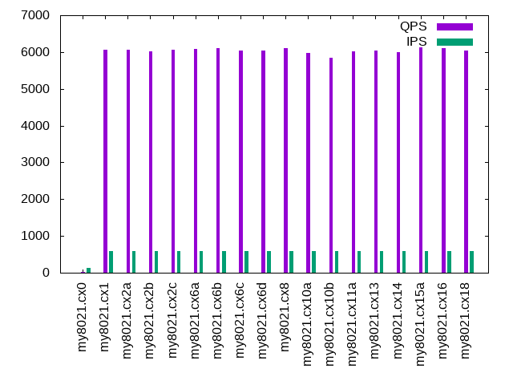

This is a report for the insert benchmark with 20M docs and 1 client(s). It is generated by scripts (bash, awk, sed) and Tufte might not be impressed. An overview of the insert benchmark is here and a short update is here. Below, by DBMS, I mean DBMS+version.config. An example is my8020.c10b40 where my means MySQL, 8020 is version 8.0.20 and c10b40 is the name for the configuration file.
The test server is described here. Clients and the DBMS shared the same host running Ubuntu 18.04.5. All tests used InnoDB with MySQL 8.0.21. The configurations for MySQL are here.
The numbers are inserts/s for l.i0 and l.i1, indexed docs (or rows) /s for l.x and queries/s for q*.2. The values are the average rate over the entire test for inserts (IPS) and queries (QPS). The range of values for IPS and QPS is split into 3 parts: bottom 25%, middle 50%, top 25%. Values in the bottom 25% have a red background, values in the top 25% have a green background and values in the middle have no color. A gray background is used for values that can be ignored because the DBMS did not sustain the target insert rate. Red backgrounds are not used when the minimum value is within 80% of the max value.
| dbms | l.i0 | l.x | l.i1 | q100.2 | q200.2 | q400.2 | q600.2 | q800.2 | q1000.2 |
|---|---|---|---|---|---|---|---|---|---|
| my8021.cx0 | 77821 | 67677 | 201 | 33 | 12 | 11 | 11 | 11 | 11 |
| my8021.cx1 | 82988 | 140559 | 26008 | 6109 | 6103 | 6032 | 6054 | 5971 | 5946 |
| my8021.cx2a | 82304 | 137671 | 26076 | 6104 | 6134 | 6092 | 6054 | 6078 | 5980 |
| my8021.cx2b | 84746 | 140559 | 26954 | 6044 | 6053 | 6082 | 6020 | 6009 | 5944 |
| my8021.cx2c | 82988 | 150000 | 26738 | 6066 | 6113 | 6028 | 6052 | 6018 | 5960 |
| my8021.cx6a | 85106 | 138621 | 27211 | 6159 | 6121 | 6084 | 6089 | 6024 | 5986 |
| my8021.cx6b | 84034 | 138621 | 27100 | 6128 | 6148 | 6128 | 6102 | 6044 | 5995 |
| my8021.cx6c | 81633 | 138621 | 26560 | 6045 | 6084 | 5988 | 6038 | 5957 | 5953 |
| my8021.cx6d | 83682 | 141549 | 27174 | 6123 | 6112 | 6112 | 6041 | 6020 | 5989 |
| my8021.cx8 | 73529 | 141549 | 26316 | 6198 | 6146 | 6118 | 6097 | 6098 | 6043 |
| my8021.cx10a | 82304 | 112290 | 25478 | 6013 | 6065 | 5990 | 5984 | 5939 | 5909 |
| my8021.cx10b | 80972 | 58772 | 23923 | 5889 | 5922 | 5868 | 5852 | 5795 | 5783 |
| my8021.cx11a | 82988 | 139583 | 27137 | 6122 | 6112 | 6088 | 6029 | 6032 | 5976 |
| my8021.cx13 | 83682 | 144604 | 27972 | 6098 | 6117 | 6102 | 6042 | 6047 | 5970 |
| my8021.cx14 | 84034 | 136735 | 26810 | 6034 | 6090 | 6071 | 6007 | 5988 | 5951 |
| my8021.cx15a | 82988 | 80080 | 27137 | 6208 | 6160 | 6154 | 6132 | 6112 | 6064 |
| my8021.cx16 | 84388 | 140559 | 27211 | 6161 | 6091 | 6088 | 6102 | 6070 | 6010 |
| my8021.cx18 | 81967 | 136735 | 26846 | 6077 | 6065 | 6133 | 6036 | 6025 | 5896 |
This lists the average rate of inserts/s for the tests that do inserts concurrent with queries. For such tests the query rate is listed in the table above. The read+write tests are setup so that the insert rate should match the target rate every second. Cells that are not at least 95% of the target have a red background to indicate a failure to satisfy the target.
| dbms | q100.2 | q200.2 | q400.2 | q600.2 | q800.2 | q1000.2 |
|---|---|---|---|---|---|---|
| my8021.cx0 | 100 | 128 | 135 | 136 | 135 | 134 |
| my8021.cx1 | 100 | 200 | 399 | 599 | 799 | 998 |
| my8021.cx2a | 100 | 200 | 399 | 599 | 799 | 998 |
| my8021.cx2b | 100 | 200 | 399 | 599 | 799 | 999 |
| my8021.cx2c | 100 | 200 | 399 | 599 | 799 | 998 |
| my8021.cx6a | 100 | 200 | 399 | 599 | 799 | 999 |
| my8021.cx6b | 100 | 200 | 399 | 599 | 799 | 998 |
| my8021.cx6c | 100 | 200 | 399 | 599 | 799 | 998 |
| my8021.cx6d | 100 | 200 | 400 | 599 | 799 | 998 |
| my8021.cx8 | 100 | 200 | 399 | 599 | 799 | 998 |
| my8021.cx10a | 100 | 200 | 399 | 599 | 799 | 998 |
| my8021.cx10b | 100 | 200 | 399 | 599 | 799 | 998 |
| my8021.cx11a | 100 | 200 | 399 | 599 | 799 | 998 |
| my8021.cx13 | 100 | 200 | 399 | 599 | 799 | 998 |
| my8021.cx14 | 100 | 200 | 399 | 599 | 799 | 998 |
| my8021.cx15a | 100 | 200 | 399 | 599 | 799 | 998 |
| my8021.cx16 | 100 | 200 | 399 | 599 | 799 | 998 |
| my8021.cx18 | 100 | 200 | 399 | 599 | 799 | 998 |
| target | 100 | 200 | 400 | 600 | 800 | 1000 |
l.i0: load without secondary indexes. Graphs for performance per 1-second interval are here.
Average throughput:
Insert response time histogram: each cell has the percentage of responses that take <= the time in the header and max is the max response time in seconds. For the max column values in the top 25% of the range have a red background and in the bottom 25% of the range have a green background. The red background is not used when the min value is within 80% of the max value.
| dbms | 256us | 1ms | 4ms | 16ms | 64ms | 256ms | 1s | 4s | 16s | gt | max |
|---|---|---|---|---|---|---|---|---|---|---|---|
| my8021.cx0 | 98.826 | 1.127 | 0.047 | 0.001 | 0.102 | ||||||
| my8021.cx1 | 99.572 | 0.392 | 0.034 | 0.002 | 0.114 | ||||||
| my8021.cx2a | 99.574 | 0.389 | 0.036 | 0.002 | 0.117 | ||||||
| my8021.cx2b | 99.575 | 0.388 | 0.036 | 0.002 | 0.112 | ||||||
| my8021.cx2c | 99.550 | 0.411 | 0.037 | 0.001 | 0.114 | ||||||
| my8021.cx6a | 99.566 | 0.396 | 0.036 | 0.002 | 0.118 | ||||||
| my8021.cx6b | 99.574 | 0.388 | 0.036 | 0.002 | 0.112 | ||||||
| my8021.cx6c | 99.575 | 0.387 | 0.036 | 0.002 | 0.113 | ||||||
| my8021.cx6d | 99.579 | 0.385 | 0.034 | 0.003 | 0.113 | ||||||
| my8021.cx8 | 99.548 | 0.411 | 0.041 | 0.051 | |||||||
| my8021.cx10a | 99.552 | 0.409 | 0.037 | 0.002 | 0.113 | ||||||
| my8021.cx10b | 99.555 | 0.407 | 0.036 | 0.002 | 0.114 | ||||||
| my8021.cx11a | 99.572 | 0.390 | 0.037 | 0.002 | 0.119 | ||||||
| my8021.cx13 | 99.562 | 0.403 | 0.033 | 0.002 | 0.120 | ||||||
| my8021.cx14 | 99.574 | 0.392 | 0.033 | 0.003 | 0.113 | ||||||
| my8021.cx15a | 99.575 | 0.383 | 0.040 | 0.001 | 0.112 | ||||||
| my8021.cx16 | 99.560 | 0.405 | 0.033 | 0.003 | 0.111 | ||||||
| my8021.cx18 | 99.560 | 0.401 | 0.037 | 0.002 | 0.112 |
Performance metrics for the DBMS listed above. Some are normalized by throughput, others are not. Legend for results is here.
ips qps rps rkbps wkbps rpq rkbpq wkbpi csps cpups cspq cpupq dbgb1 dbgb2 rss maxop p50 p99 tag 77821 0 0 0 37993 0.000 0.000 0.488 21078 42.2 0.271 22 1.3 2.0 0.5 0.102 78756 64032 my8021.cx0 82988 0 0 0 29003 0.000 0.000 0.349 19361 42.8 0.233 21 1.3 10.9 2.5 0.114 84215 46587 my8021.cx1 82304 0 0 0 26527 0.000 0.000 0.322 19143 42.7 0.233 21 1.3 21.9 2.5 0.117 82927 37891 my8021.cx2a 84746 0 0 0 27340 0.000 0.000 0.323 19015 43.1 0.224 20 1.3 41.9 2.5 0.112 85609 37361 my8021.cx2b 82988 0 0 0 33872 0.000 0.000 0.408 19748 42.9 0.238 21 1.3 3.9 2.5 0.114 83507 72854 my8021.cx2c 85106 0 0 0 27118 0.000 0.000 0.319 19105 42.8 0.224 20 1.3 41.9 2.5 0.118 85747 50243 my8021.cx6a 84034 0 0 0 27124 0.000 0.000 0.323 19141 42.9 0.228 20 1.3 41.9 2.5 0.112 84707 65916 my8021.cx6b 81633 0 0 0 26044 0.000 0.000 0.319 19164 42.6 0.235 21 1.3 41.9 2.5 0.113 82718 42287 my8021.cx6c 83682 0 0 0 26667 0.000 0.000 0.319 19146 43.1 0.229 21 1.3 41.9 2.5 0.113 84537 45553 my8021.cx6d 73529 0 0 0 23718 0.000 0.000 0.323 17754 41.1 0.241 22 1.3 41.9 2.5 0.051 74021 67334 my8021.cx8 82304 0 0 0 26979 0.000 0.000 0.328 19474 42.7 0.237 21 1.3 41.9 3.1 0.113 83143 17082 my8021.cx10a 80972 0 0 0 27074 0.000 0.000 0.334 20173 42.6 0.249 21 1.4 41.9 4.4 0.114 82087 57823 my8021.cx10b 82988 0 0 0 26387 0.000 0.000 0.318 19111 42.8 0.230 21 1.3 41.9 2.5 0.119 84110 44153 my8021.cx11a 83682 0 0 0 25696 0.000 0.000 0.307 19148 43.0 0.229 21 1.3 41.9 2.5 0.120 84507 37952 my8021.cx13 84034 0 0 0 26800 0.000 0.000 0.319 18954 43.3 0.226 21 1.3 41.9 2.5 0.113 85006 39757 my8021.cx14 82988 0 0 0 28098 0.000 0.000 0.339 19331 42.8 0.233 21 1.3 41.9 2.5 0.112 83611 57827 my8021.cx15a 84388 0 0 0 26786 0.000 0.000 0.317 19164 43.0 0.227 20 1.3 41.9 2.5 0.111 85526 36557 my8021.cx16 81967 0 0 0 26523 0.000 0.000 0.324 19034 42.6 0.232 21 1.3 41.9 2.5 0.112 82541 55873 my8021.cx18
l.x: create secondary indexes.
Average throughput:
Performance metrics for the DBMS listed above. Some are normalized by throughput, others are not. Legend for results is here.
ips qps rps rkbps wkbps rpq rkbpq wkbpi csps cpups cspq cpupq dbgb1 dbgb2 rss maxop p50 p99 tag 67677 0 0 3 62788 0.000 0.000 0.928 5329 19.0 0.079 11 3.0 3.6 0.5 0.010 NA NA my8021.cx0 140559 0 0 0 137656 0.000 0.000 0.979 8520 24.4 0.061 7 3.0 12.5 3.0 0.011 NA NA my8021.cx1 137671 0 0 7 135327 0.000 0.000 0.983 8540 24.3 0.062 7 3.0 23.5 3.0 0.009 NA NA my8021.cx2a 140559 0 0 0 138617 0.000 0.000 0.986 8568 24.6 0.061 7 3.0 43.5 3.0 0.021 NA NA my8021.cx2b 150000 0 0 0 137893 0.000 0.000 0.919 7827 24.8 0.052 7 3.0 5.5 3.1 0.010 NA NA my8021.cx2c 138621 0 2 24 136624 0.000 0.000 0.986 8360 24.5 0.060 7 3.0 43.5 3.0 0.013 NA NA my8021.cx6a 138621 0 0 0 132103 0.000 0.000 0.953 7856 24.8 0.057 7 3.0 43.5 3.0 0.020 NA NA my8021.cx6b 138621 0 0 0 133306 0.000 0.000 0.962 7997 24.6 0.058 7 3.0 43.5 3.0 0.011 NA NA my8021.cx6c 141549 0 0 0 135416 0.000 0.000 0.957 8276 24.8 0.058 7 3.0 43.5 3.0 0.012 NA NA my8021.cx6d 141549 0 0 0 136042 0.000 0.000 0.961 8221 25.0 0.058 7 3.0 43.5 3.0 0.010 NA NA my8021.cx8 112290 0 0 0 108781 0.000 0.000 0.969 12451 25.1 0.111 9 3.0 43.5 3.6 0.010 NA NA my8021.cx10a 58772 0 0 0 56224 0.000 0.000 0.957 12820 24.9 0.218 17 3.1 43.6 4.9 0.010 NA NA my8021.cx10b 139583 0 0 0 131908 0.000 0.000 0.945 7870 24.8 0.056 7 3.0 43.5 3.0 0.020 NA NA my8021.cx11a 144604 0 0 0 122697 0.000 0.000 0.849 8425 26.6 0.058 7 3.0 43.5 3.9 0.020 NA NA my8021.cx13 136735 0 0 0 131112 0.000 0.000 0.959 8059 24.7 0.059 7 3.0 43.5 3.0 0.021 NA NA my8021.cx14 80080 0 0 0 76371 0.000 0.000 0.954 3244 24.7 0.041 12 3.0 43.5 3.0 0.020 NA NA my8021.cx15a 140559 0 0 0 135335 0.000 0.000 0.963 8248 24.8 0.059 7 3.0 43.5 3.0 0.013 NA NA my8021.cx16 136735 0 0 0 131503 0.000 0.000 0.962 8126 24.7 0.059 7 3.0 43.5 3.0 0.013 NA NA my8021.cx18
l.i1: continue load after secondary indexes created. Graphs for performance per 1-second interval are here.
Average throughput:
Insert response time histogram: each cell has the percentage of responses that take <= the time in the header and max is the max response time in seconds. For the max column values in the top 25% of the range have a red background and in the bottom 25% of the range have a green background. The red background is not used when the min value is within 80% of the max value.
| dbms | 256us | 1ms | 4ms | 16ms | 64ms | 256ms | 1s | 4s | 16s | gt | max |
|---|---|---|---|---|---|---|---|---|---|---|---|
| my8021.cx0 | 0.313 | 0.891 | 23.579 | 40.218 | 32.759 | 2.240 | 2.719 | ||||
| my8021.cx1 | 98.713 | 1.074 | 0.133 | 0.073 | 0.007 | 0.510 | |||||
| my8021.cx2a | 98.785 | 0.992 | 0.149 | 0.073 | 0.176 | ||||||
| my8021.cx2b | 98.980 | 0.861 | 0.112 | 0.046 | 0.129 | ||||||
| my8021.cx2c | 98.497 | 1.348 | 0.120 | 0.036 | 0.171 | ||||||
| my8021.cx6a | 99.003 | 0.840 | 0.105 | 0.052 | 0.121 | ||||||
| my8021.cx6b | 98.993 | 0.848 | 0.114 | 0.046 | 0.134 | ||||||
| my8021.cx6c | 98.980 | 0.851 | 0.120 | 0.049 | 0.134 | ||||||
| my8021.cx6d | 99.120 | 0.716 | 0.114 | 0.051 | 0.133 | ||||||
| my8021.cx8 | 99.094 | 0.751 | 0.109 | 0.045 | 0.132 | ||||||
| my8021.cx10a | 98.853 | 0.880 | 0.192 | 0.074 | 0.121 | ||||||
| my8021.cx10b | 98.441 | 1.027 | 0.416 | 0.116 | 0.102 | ||||||
| my8021.cx11a | 99.129 | 0.709 | 0.117 | 0.045 | 0.130 | ||||||
| my8021.cx13 | 99.132 | 0.822 | 0.046 | 0.056 | |||||||
| my8021.cx14 | 99.118 | 0.718 | 0.102 | 0.064 | 0.162 | ||||||
| my8021.cx15a | 99.003 | 0.834 | 0.111 | 0.053 | 0.121 | ||||||
| my8021.cx16 | 99.120 | 0.722 | 0.106 | 0.052 | 0.132 | ||||||
| my8021.cx18 | 99.124 | 0.717 | 0.112 | 0.048 | 0.136 |
Performance metrics for the DBMS listed above. Some are normalized by throughput, others are not. Legend for results is here.
ips qps rps rkbps wkbps rpq rkbpq wkbpi csps cpups cspq cpupq dbgb1 dbgb2 rss maxop p50 p99 tag 201 0 0 0 7404 0.000 0.000 36.764 5665 8.8 28.127 1748 7.8 8.4 0.5 2.719 200 0 my8021.cx0 26008 0 108 1725 41313 0.004 0.066 1.588 15948 31.8 0.613 49 7.9 17.4 8.3 0.510 28345 200 my8021.cx1 26076 0 103 1647 35933 0.004 0.063 1.378 15275 31.9 0.586 49 7.9 28.4 8.3 0.176 28098 399 my8021.cx2a 26954 0 100 1598 29203 0.004 0.059 1.083 14765 32.1 0.548 48 7.9 48.4 8.3 0.129 28818 549 my8021.cx2b 26738 0 80 1276 64969 0.003 0.048 2.430 17844 32.5 0.667 49 7.9 10.4 8.3 0.171 28232 649 my8021.cx2c 27211 0 101 1615 28714 0.004 0.059 1.055 14950 32.4 0.549 48 7.9 48.4 8.3 0.121 29028 549 my8021.cx6a 27100 0 99 1587 29243 0.004 0.059 1.079 14827 32.1 0.547 47 7.9 48.4 8.3 0.134 28892 550 my8021.cx6b 26560 0 100 1595 29858 0.004 0.060 1.124 14691 32.1 0.553 48 7.9 48.4 8.3 0.134 28382 549 my8021.cx6c 27174 0 102 1629 20357 0.004 0.060 0.749 13971 32.0 0.514 47 7.9 48.4 8.3 0.133 28889 550 my8021.cx6d 26316 0 98 1575 19747 0.004 0.060 0.750 13558 31.9 0.515 48 7.9 48.4 8.3 0.132 27986 500 my8021.cx8 25478 0 210 1676 19811 0.008 0.066 0.778 13872 31.6 0.544 50 8.4 48.9 9.4 0.121 27993 599 my8021.cx10a 23923 0 421 1685 18132 0.018 0.070 0.758 14487 31.2 0.606 52 8.0 48.5 10.3 0.102 27271 600 my8021.cx10b 27137 0 101 1620 20347 0.004 0.060 0.750 13953 31.9 0.514 47 7.9 48.4 8.3 0.130 28783 500 my8021.cx11a 27972 0 0 0 18714 0.000 0.000 0.669 13881 32.4 0.496 46 7.9 48.4 8.3 0.056 28779 5799 my8021.cx13 26810 0 103 1649 20175 0.004 0.062 0.753 14108 31.9 0.526 48 7.9 48.4 8.3 0.162 28873 399 my8021.cx14 27137 0 97 1555 30075 0.004 0.057 1.108 15115 32.2 0.557 47 7.9 48.4 8.3 0.121 28982 550 my8021.cx15a 27211 0 103 1650 20436 0.004 0.061 0.751 14113 32.1 0.519 47 7.9 48.4 8.3 0.132 28936 500 my8021.cx16 26846 0 103 1645 20123 0.004 0.061 0.750 13778 31.9 0.513 48 7.9 48.4 8.3 0.136 28578 500 my8021.cx18
q100.2: range queries with 100 insert/s per client, 2nd loop. Graphs for performance per 1-second interval are here.
Average throughput:
Query response time histogram: each cell has the percentage of responses that take <= the time in the header and max is the max response time in seconds. For max values in the top 25% of the range have a red background and in the bottom 25% of the range have a green background. The red background is not used when the min value is within 80% of the max value.
| dbms | 256us | 1ms | 4ms | 16ms | 64ms | 256ms | 1s | 4s | 16s | gt | max |
|---|---|---|---|---|---|---|---|---|---|---|---|
| my8021.cx0 | 0.023 | 1.581 | 35.974 | 3.936 | 47.160 | 11.139 | 0.187 | 0.417 | |||
| my8021.cx1 | 99.722 | 0.277 | nonzero | nonzero | nonzero | 0.022 | |||||
| my8021.cx2a | 99.699 | 0.301 | nonzero | nonzero | nonzero | 0.017 | |||||
| my8021.cx2b | 99.730 | 0.270 | nonzero | nonzero | nonzero | 0.021 | |||||
| my8021.cx2c | 99.739 | 0.261 | nonzero | nonzero | nonzero | 0.020 | |||||
| my8021.cx6a | 99.813 | 0.187 | nonzero | nonzero | nonzero | 0.018 | |||||
| my8021.cx6b | 99.758 | 0.242 | nonzero | nonzero | nonzero | 0.020 | |||||
| my8021.cx6c | 99.781 | 0.219 | nonzero | nonzero | nonzero | 0.019 | |||||
| my8021.cx6d | 99.763 | 0.237 | nonzero | nonzero | nonzero | 0.020 | |||||
| my8021.cx8 | 99.820 | 0.180 | nonzero | nonzero | nonzero | 0.017 | |||||
| my8021.cx10a | 99.696 | 0.303 | nonzero | nonzero | 0.012 | ||||||
| my8021.cx10b | 99.663 | 0.337 | nonzero | nonzero | 0.006 | ||||||
| my8021.cx11a | 99.779 | 0.221 | nonzero | nonzero | nonzero | 0.021 | |||||
| my8021.cx13 | 99.739 | 0.261 | nonzero | nonzero | nonzero | 0.019 | |||||
| my8021.cx14 | 99.759 | 0.241 | nonzero | nonzero | nonzero | 0.017 | |||||
| my8021.cx15a | 99.842 | 0.158 | nonzero | nonzero | nonzero | 0.023 | |||||
| my8021.cx16 | 99.788 | 0.212 | nonzero | nonzero | nonzero | 0.020 | |||||
| my8021.cx18 | 99.757 | 0.242 | nonzero | nonzero | 0.013 |
Insert response time histogram: each cell has the percentage of responses that take <= the time in the header and max is the max response time in seconds. For max values in the top 25% of the range have a red background and in the bottom 25% of the range have a green background. The red background is not used when the min value is within 80% of the max value.
| dbms | 256us | 1ms | 4ms | 16ms | 64ms | 256ms | 1s | 4s | 16s | gt | max |
|---|---|---|---|---|---|---|---|---|---|---|---|
| my8021.cx0 | 0.056 | 0.111 | 8.389 | 60.222 | 31.194 | 0.028 | 1.029 | ||||
| my8021.cx1 | 97.861 | 2.056 | 0.083 | 0.025 | |||||||
| my8021.cx2a | 98.306 | 1.583 | 0.111 | 0.022 | |||||||
| my8021.cx2b | 98.333 | 1.556 | 0.111 | 0.024 | |||||||
| my8021.cx2c | 98.194 | 1.639 | 0.167 | 0.023 | |||||||
| my8021.cx6a | 99.250 | 0.444 | 0.306 | 0.024 | |||||||
| my8021.cx6b | 99.222 | 0.444 | 0.333 | 0.024 | |||||||
| my8021.cx6c | 99.222 | 0.444 | 0.333 | 0.023 | |||||||
| my8021.cx6d | 98.444 | 1.444 | 0.111 | 0.026 | |||||||
| my8021.cx8 | 98.750 | 1.167 | 0.083 | 0.022 | |||||||
| my8021.cx10a | 98.278 | 1.611 | 0.111 | 0.024 | |||||||
| my8021.cx10b | 98.417 | 1.444 | 0.139 | 0.024 | |||||||
| my8021.cx11a | 98.917 | 0.944 | 0.139 | 0.024 | |||||||
| my8021.cx13 | 98.694 | 1.111 | 0.194 | 0.023 | |||||||
| my8021.cx14 | 98.722 | 1.083 | 0.194 | 0.025 | |||||||
| my8021.cx15a | 99.194 | 0.472 | 0.333 | 0.027 | |||||||
| my8021.cx16 | 98.583 | 1.306 | 0.111 | 0.023 | |||||||
| my8021.cx18 | 98.806 | 1.056 | 0.139 | 0.024 |
Performance metrics for the DBMS listed above. Some are normalized by throughput, others are not. Legend for results is here.
ips qps rps rkbps wkbps rpq rkbpq wkbpi csps cpups cspq cpupq dbgb1 dbgb2 rss maxop p50 p99 tag 100 33 0 0 6830 0.000 0.000 68.436 5251 8.6 157.699 10331 8.0 8.6 0.5 0.417 32 0 my8021.cx0 100 6109 0 0 1259 0.000 0.000 12.618 24316 26.0 3.980 170 8.1 17.6 8.5 0.022 6121 6025 my8021.cx1 100 6104 0 0 1397 0.000 0.000 14.003 24336 26.0 3.987 170 8.1 28.6 8.5 0.017 6109 6025 my8021.cx2a 100 6044 0 0 1397 0.000 0.000 14.002 24092 26.0 3.986 172 8.1 48.6 8.5 0.021 6057 5961 my8021.cx2b 100 6066 0 0 1691 0.000 0.000 16.940 24186 26.0 3.987 171 8.1 10.6 8.5 0.020 6073 5978 my8021.cx2c 100 6159 0 0 106 0.000 0.000 1.065 24188 26.0 3.927 169 8.1 48.6 8.5 0.018 6169 6073 my8021.cx6a 100 6128 0 0 106 0.000 0.000 1.066 24078 25.9 3.930 169 8.1 48.6 8.5 0.020 6137 6041 my8021.cx6b 100 6045 0 0 106 0.000 0.000 1.066 23791 26.0 3.936 172 8.1 48.6 8.5 0.019 6057 5945 my8021.cx6c 100 6123 0 0 1033 0.000 0.000 10.351 24238 26.0 3.958 170 8.1 48.6 8.5 0.020 6137 6010 my8021.cx6d 100 6198 0 0 959 0.000 0.000 9.606 24515 26.0 3.955 168 8.1 48.6 8.5 0.017 6201 6105 my8021.cx8 100 6013 0 0 1645 0.000 0.000 16.479 24070 26.0 4.003 173 8.5 49.1 9.5 0.012 6025 5929 my8021.cx10a 100 5889 0 0 974 0.000 0.000 9.756 23647 25.9 4.016 176 8.1 48.7 10.4 0.006 5897 5786 my8021.cx10b 100 6122 0 0 1022 0.000 0.000 10.240 24235 26.0 3.959 170 8.1 48.6 8.5 0.021 6124 6026 my8021.cx11a 100 6098 0 0 554 0.000 0.000 5.550 24146 26.0 3.960 171 8.1 48.6 8.5 0.019 6105 6009 my8021.cx13 100 6034 0 0 967 0.000 0.000 9.687 23861 26.0 3.954 172 8.1 48.6 8.5 0.017 6041 5930 my8021.cx14 100 6208 0 0 106 0.000 0.000 1.062 24383 25.9 3.928 167 8.1 48.6 8.5 0.023 6217 6121 my8021.cx15a 100 6161 0 0 1030 0.000 0.000 10.321 24386 26.0 3.958 169 8.1 48.6 8.5 0.020 6169 6057 my8021.cx16 100 6077 0 0 983 0.000 0.000 9.848 24060 26.0 3.959 171 8.1 48.6 8.5 0.013 6089 5977 my8021.cx18
q200.2: range queries with 200 insert/s per client, 2nd loop. Graphs for performance per 1-second interval are here.
Average throughput:
Query response time histogram: each cell has the percentage of responses that take <= the time in the header and max is the max response time in seconds. For max values in the top 25% of the range have a red background and in the bottom 25% of the range have a green background. The red background is not used when the min value is within 80% of the max value.
| dbms | 256us | 1ms | 4ms | 16ms | 64ms | 256ms | 1s | 4s | 16s | gt | max |
|---|---|---|---|---|---|---|---|---|---|---|---|
| my8021.cx0 | 0.003 | 0.244 | 6.123 | 0.834 | 34.233 | 55.799 | 2.764 | 0.931 | |||
| my8021.cx1 | 99.705 | 0.295 | nonzero | nonzero | nonzero | 0.021 | |||||
| my8021.cx2a | 99.708 | 0.291 | nonzero | nonzero | nonzero | 0.019 | |||||
| my8021.cx2b | 99.661 | 0.338 | nonzero | nonzero | 0.015 | ||||||
| my8021.cx2c | 99.665 | 0.335 | nonzero | nonzero | nonzero | 0.018 | |||||
| my8021.cx6a | 99.755 | 0.245 | nonzero | nonzero | nonzero | 0.020 | |||||
| my8021.cx6b | 99.752 | 0.248 | nonzero | nonzero | 0.014 | ||||||
| my8021.cx6c | 99.760 | 0.240 | nonzero | nonzero | nonzero | 0.018 | |||||
| my8021.cx6d | 99.743 | 0.257 | nonzero | nonzero | nonzero | 0.020 | |||||
| my8021.cx8 | 99.684 | 0.315 | nonzero | nonzero | nonzero | 0.019 | |||||
| my8021.cx10a | 99.729 | 0.271 | nonzero | nonzero | nonzero | 0.020 | |||||
| my8021.cx10b | 99.631 | 0.368 | nonzero | nonzero | 0.012 | ||||||
| my8021.cx11a | 99.753 | 0.246 | nonzero | nonzero | nonzero | 0.022 | |||||
| my8021.cx13 | 99.722 | 0.277 | nonzero | nonzero | nonzero | 0.020 | |||||
| my8021.cx14 | 99.771 | 0.229 | nonzero | nonzero | nonzero | 0.022 | |||||
| my8021.cx15a | 99.735 | 0.265 | nonzero | nonzero | nonzero | 0.019 | |||||
| my8021.cx16 | 99.719 | 0.280 | nonzero | nonzero | nonzero | 0.023 | |||||
| my8021.cx18 | 99.697 | 0.303 | nonzero | nonzero | nonzero | 0.018 |
Insert response time histogram: each cell has the percentage of responses that take <= the time in the header and max is the max response time in seconds. For max values in the top 25% of the range have a red background and in the bottom 25% of the range have a green background. The red background is not used when the min value is within 80% of the max value.
| dbms | 256us | 1ms | 4ms | 16ms | 64ms | 256ms | 1s | 4s | 16s | gt | max |
|---|---|---|---|---|---|---|---|---|---|---|---|
| my8021.cx0 | 0.028 | 0.514 | 32.167 | 65.056 | 2.236 | 2.660 | |||||
| my8021.cx1 | 98.000 | 1.944 | 0.056 | 0.025 | |||||||
| my8021.cx2a | 98.153 | 1.764 | 0.083 | 0.026 | |||||||
| my8021.cx2b | 98.319 | 1.569 | 0.111 | 0.024 | |||||||
| my8021.cx2c | 98.319 | 1.569 | 0.111 | 0.024 | |||||||
| my8021.cx6a | 99.347 | 0.417 | 0.236 | 0.024 | |||||||
| my8021.cx6b | 99.347 | 0.389 | 0.264 | 0.024 | |||||||
| my8021.cx6c | 99.389 | 0.417 | 0.194 | 0.025 | |||||||
| my8021.cx6d | 99.139 | 0.708 | 0.153 | 0.025 | |||||||
| my8021.cx8 | 99.097 | 0.708 | 0.194 | 0.024 | |||||||
| my8021.cx10a | 98.889 | 0.944 | 0.167 | 0.026 | |||||||
| my8021.cx10b | 98.083 | 1.806 | 0.111 | 0.023 | |||||||
| my8021.cx11a | 99.056 | 0.764 | 0.181 | 0.027 | |||||||
| my8021.cx13 | 99.194 | 0.611 | 0.194 | 0.026 | |||||||
| my8021.cx14 | 99.153 | 0.708 | 0.139 | 0.024 | |||||||
| my8021.cx15a | 99.333 | 0.403 | 0.264 | 0.022 | |||||||
| my8021.cx16 | 98.889 | 0.944 | 0.167 | 0.027 | |||||||
| my8021.cx18 | 99.139 | 0.694 | 0.167 | 0.025 |
Performance metrics for the DBMS listed above. Some are normalized by throughput, others are not. Legend for results is here.
ips qps rps rkbps wkbps rpq rkbpq wkbpi csps cpups cspq cpupq dbgb1 dbgb2 rss maxop p50 p99 tag 128 12 0 0 7013 0.000 0.000 54.701 5943 8.9 516.765 30957 8.3 8.9 0.5 0.931 16 0 my8021.cx0 200 6103 0 0 1751 0.000 0.000 8.771 24381 26.1 3.995 171 8.4 17.9 8.8 0.021 6105 6010 my8021.cx1 200 6134 0 0 1499 0.000 0.000 7.511 24481 26.1 3.991 170 8.4 28.9 8.8 0.019 6137 6041 my8021.cx2a 200 6053 0 0 1721 0.000 0.000 8.621 24184 26.0 3.995 172 8.4 48.9 8.8 0.015 6058 5977 my8021.cx2b 200 6113 0 0 3475 0.000 0.000 17.408 24566 26.1 4.019 171 8.4 10.9 8.8 0.018 6121 6025 my8021.cx2c 200 6121 0 0 174 0.000 0.000 0.870 24095 26.0 3.937 170 8.4 48.9 8.8 0.020 6137 6025 my8021.cx6a 200 6148 0 0 177 0.000 0.000 0.886 24197 26.1 3.935 170 8.4 48.9 8.8 0.014 6153 6073 my8021.cx6b 200 6084 0 0 176 0.000 0.000 0.882 23947 26.1 3.936 172 8.4 48.9 8.8 0.018 6089 5993 my8021.cx6c 200 6112 0 0 210 0.000 0.000 1.054 24082 26.1 3.940 171 8.4 48.9 8.8 0.020 6121 6013 my8021.cx6d 200 6146 0 0 213 0.000 0.000 1.065 24213 26.0 3.940 169 8.4 48.9 8.8 0.019 6157 6041 my8021.cx8 200 6065 0 0 215 0.000 0.000 1.075 23905 26.1 3.942 172 8.8 49.4 9.8 0.020 6073 5961 my8021.cx10a 200 5922 0 0 957 0.000 0.000 4.794 23792 26.0 4.018 176 8.4 48.9 10.6 0.012 5929 5818 my8021.cx10b 200 6112 0 0 211 0.000 0.000 1.055 24084 26.0 3.941 170 8.4 48.9 8.8 0.022 6121 6015 my8021.cx11a 200 6117 0 0 195 0.000 0.000 0.975 24095 26.1 3.939 171 8.4 48.9 8.8 0.020 6121 6025 my8021.cx13 200 6090 0 0 213 0.000 0.000 1.069 23957 26.1 3.934 171 8.4 48.9 8.8 0.022 6105 5994 my8021.cx14 200 6160 0 0 176 0.000 0.000 0.884 24244 26.0 3.935 169 8.4 48.9 8.8 0.019 6169 6073 my8021.cx15a 200 6091 0 0 209 0.000 0.000 1.047 23998 26.1 3.940 171 8.4 48.9 8.8 0.023 6105 5993 my8021.cx16 200 6065 0 0 214 0.000 0.000 1.072 23900 26.0 3.941 171 8.4 48.9 8.8 0.018 6073 5977 my8021.cx18
q400.2: range queries with 400 insert/s per client, 2nd loop. Graphs for performance per 1-second interval are here.
Average throughput:
Query response time histogram: each cell has the percentage of responses that take <= the time in the header and max is the max response time in seconds. For max values in the top 25% of the range have a red background and in the bottom 25% of the range have a green background. The red background is not used when the min value is within 80% of the max value.
| dbms | 256us | 1ms | 4ms | 16ms | 64ms | 256ms | 1s | 4s | 16s | gt | max |
|---|---|---|---|---|---|---|---|---|---|---|---|
| my8021.cx0 | 0.002 | 0.229 | 6.573 | 0.917 | 32.734 | 56.041 | 3.504 | 0.989 | |||
| my8021.cx1 | 99.554 | 0.445 | 0.001 | nonzero | nonzero | 0.021 | |||||
| my8021.cx2a | 99.598 | 0.402 | 0.001 | nonzero | nonzero | 0.020 | |||||
| my8021.cx2b | 99.624 | 0.375 | 0.001 | nonzero | nonzero | 0.022 | |||||
| my8021.cx2c | 99.485 | 0.514 | 0.001 | nonzero | nonzero | 0.022 | |||||
| my8021.cx6a | 99.669 | 0.330 | 0.001 | nonzero | nonzero | 0.022 | |||||
| my8021.cx6b | 99.685 | 0.314 | 0.001 | nonzero | nonzero | 0.019 | |||||
| my8021.cx6c | 99.624 | 0.375 | 0.001 | nonzero | nonzero | 0.021 | |||||
| my8021.cx6d | 99.708 | 0.291 | 0.001 | nonzero | nonzero | 0.021 | |||||
| my8021.cx8 | 99.647 | 0.352 | 0.001 | nonzero | nonzero | 0.019 | |||||
| my8021.cx10a | 99.622 | 0.378 | 0.001 | nonzero | nonzero | 0.020 | |||||
| my8021.cx10b | 99.504 | 0.495 | 0.001 | nonzero | nonzero | 0.018 | |||||
| my8021.cx11a | 99.663 | 0.336 | 0.001 | nonzero | nonzero | 0.019 | |||||
| my8021.cx13 | 99.668 | 0.331 | 0.001 | nonzero | nonzero | 0.020 | |||||
| my8021.cx14 | 99.662 | 0.337 | 0.001 | nonzero | nonzero | 0.019 | |||||
| my8021.cx15a | 99.667 | 0.332 | 0.001 | nonzero | nonzero | 0.021 | |||||
| my8021.cx16 | 99.639 | 0.360 | 0.001 | nonzero | nonzero | 0.021 | |||||
| my8021.cx18 | 99.701 | 0.298 | 0.001 | nonzero | nonzero | 0.021 |
Insert response time histogram: each cell has the percentage of responses that take <= the time in the header and max is the max response time in seconds. For max values in the top 25% of the range have a red background and in the bottom 25% of the range have a green background. The red background is not used when the min value is within 80% of the max value.
| dbms | 256us | 1ms | 4ms | 16ms | 64ms | 256ms | 1s | 4s | 16s | gt | max |
|---|---|---|---|---|---|---|---|---|---|---|---|
| my8021.cx0 | 0.056 | 0.257 | 5.576 | 40.674 | 48.340 | 5.097 | 2.928 | ||||
| my8021.cx1 | 98.389 | 1.569 | 0.042 | 0.023 | |||||||
| my8021.cx2a | 98.424 | 1.521 | 0.056 | 0.023 | |||||||
| my8021.cx2b | 98.611 | 1.306 | 0.083 | 0.025 | |||||||
| my8021.cx2c | 98.403 | 1.542 | 0.056 | 0.024 | |||||||
| my8021.cx6a | 99.597 | 0.257 | 0.146 | 0.025 | |||||||
| my8021.cx6b | 99.597 | 0.278 | 0.125 | 0.025 | |||||||
| my8021.cx6c | 99.257 | 0.590 | 0.153 | 0.025 | |||||||
| my8021.cx6d | 99.243 | 0.715 | 0.042 | 0.024 | |||||||
| my8021.cx8 | 99.132 | 0.792 | 0.076 | 0.028 | |||||||
| my8021.cx10a | 98.549 | 1.333 | 0.118 | 0.024 | |||||||
| my8021.cx10b | 98.208 | 1.729 | 0.062 | 0.024 | |||||||
| my8021.cx11a | 99.215 | 0.736 | 0.049 | 0.026 | |||||||
| my8021.cx13 | 99.215 | 0.729 | 0.056 | 0.023 | |||||||
| my8021.cx14 | 99.243 | 0.681 | 0.076 | 0.023 | |||||||
| my8021.cx15a | 99.611 | 0.243 | 0.146 | 0.025 | |||||||
| my8021.cx16 | 99.188 | 0.708 | 0.104 | 0.027 | |||||||
| my8021.cx18 | 99.167 | 0.778 | 0.056 | 0.024 |
Performance metrics for the DBMS listed above. Some are normalized by throughput, others are not. Legend for results is here.
ips qps rps rkbps wkbps rpq rkbpq wkbpi csps cpups cspq cpupq dbgb1 dbgb2 rss maxop p50 p99 tag 135 11 0 0 6991 0.000 0.000 51.823 5905 8.9 531.997 32073 8.7 9.3 0.5 0.989 16 0 my8021.cx0 399 6032 0 0 2045 0.000 0.000 5.121 24217 26.3 4.014 174 8.8 18.3 9.1 0.021 6041 5929 my8021.cx1 399 6092 0 0 256897 0.000 0.000 643.369 24453 26.4 4.014 173 8.8 29.3 9.1 0.020 6105 5993 my8021.cx2a 399 6082 0 0 2009 0.000 0.000 5.031 24423 26.3 4.016 173 8.8 49.3 9.1 0.022 6089 5978 my8021.cx2b 399 6028 0 0 5003 0.000 0.000 12.528 24468 26.4 4.059 175 8.8 11.3 9.1 0.022 6041 5898 my8021.cx2c 399 6084 0 0 242 0.000 0.000 0.605 24039 26.2 3.951 172 8.8 49.3 9.1 0.022 6089 5961 my8021.cx6a 399 6128 0 0 242 0.000 0.000 0.606 24205 26.3 3.950 172 8.8 49.3 9.1 0.019 6137 6042 my8021.cx6b 399 5988 0 0 296 0.000 0.000 0.741 23683 26.3 3.955 176 8.8 49.3 9.1 0.021 5994 5866 my8021.cx6c 400 6112 0 0 306 0.000 0.000 0.767 24156 26.3 3.953 172 8.8 49.3 9.1 0.021 6109 6025 my8021.cx6d 399 6118 0 0 300 0.000 0.000 0.752 24204 26.3 3.956 172 8.8 49.3 9.1 0.019 6127 6030 my8021.cx8 399 5990 0 0 351 0.000 0.000 0.880 23748 26.3 3.964 176 9.3 49.9 10.2 0.020 5994 5898 my8021.cx10a 399 5868 0 0 766 0.000 0.000 1.917 23578 26.3 4.018 179 8.8 49.4 11.0 0.018 5868 5770 my8021.cx10b 399 6088 0 0 306 0.000 0.000 0.767 24092 26.3 3.957 173 8.8 49.3 9.1 0.019 6094 5994 my8021.cx11a 399 6102 0 0 274 0.000 0.000 0.687 24144 26.3 3.956 172 8.8 49.3 9.1 0.020 6105 6009 my8021.cx13 399 6071 0 0 304 0.000 0.000 0.761 24055 26.5 3.962 175 8.8 49.3 9.1 0.019 6089 5722 my8021.cx14 399 6154 0 0 242 0.000 0.000 0.606 24305 26.3 3.950 171 8.8 49.3 9.1 0.021 6169 6041 my8021.cx15a 399 6088 0 0 302 0.000 0.000 0.756 24094 26.3 3.958 173 8.8 49.3 9.1 0.021 6105 5993 my8021.cx16 399 6133 0 0 307 0.000 0.000 0.769 24254 26.3 3.955 172 8.8 49.3 9.1 0.021 6137 6042 my8021.cx18
q600.2: range queries with 600 insert/s per client, 2nd loop. Graphs for performance per 1-second interval are here.
Average throughput:
Query response time histogram: each cell has the percentage of responses that take <= the time in the header and max is the max response time in seconds. For max values in the top 25% of the range have a red background and in the bottom 25% of the range have a green background. The red background is not used when the min value is within 80% of the max value.
| dbms | 256us | 1ms | 4ms | 16ms | 64ms | 256ms | 1s | 4s | 16s | gt | max |
|---|---|---|---|---|---|---|---|---|---|---|---|
| my8021.cx0 | 0.002 | 0.309 | 7.132 | 0.909 | 30.668 | 57.276 | 3.702 | 0.001 | 1.033 | ||
| my8021.cx1 | 99.574 | 0.425 | 0.001 | nonzero | nonzero | 0.019 | |||||
| my8021.cx2a | 99.527 | 0.472 | 0.001 | nonzero | 0.008 | ||||||
| my8021.cx2b | 99.535 | 0.464 | 0.001 | nonzero | 0.009 | ||||||
| my8021.cx2c | 99.555 | 0.444 | 0.001 | nonzero | nonzero | 0.019 | |||||
| my8021.cx6a | 99.630 | 0.369 | 0.001 | nonzero | nonzero | 0.022 | |||||
| my8021.cx6b | 99.645 | 0.354 | 0.001 | nonzero | nonzero | 0.022 | |||||
| my8021.cx6c | 99.631 | 0.368 | 0.001 | nonzero | nonzero | 0.020 | |||||
| my8021.cx6d | 99.619 | 0.380 | 0.001 | nonzero | nonzero | 0.020 | |||||
| my8021.cx8 | 99.618 | 0.381 | 0.001 | nonzero | nonzero | 0.018 | |||||
| my8021.cx10a | 99.523 | 0.476 | 0.001 | nonzero | nonzero | 0.021 | |||||
| my8021.cx10b | 99.400 | 0.600 | 0.001 | nonzero | 0.015 | ||||||
| my8021.cx11a | 99.630 | 0.369 | 0.001 | nonzero | nonzero | 0.022 | |||||
| my8021.cx13 | 99.604 | 0.395 | 0.001 | nonzero | nonzero | 0.019 | |||||
| my8021.cx14 | 99.636 | 0.363 | 0.001 | nonzero | 0.008 | ||||||
| my8021.cx15a | 99.653 | 0.346 | 0.001 | nonzero | nonzero | 0.019 | |||||
| my8021.cx16 | 99.652 | 0.347 | 0.001 | nonzero | nonzero | 0.024 | |||||
| my8021.cx18 | 99.631 | 0.367 | 0.001 | nonzero | 0.009 |
Insert response time histogram: each cell has the percentage of responses that take <= the time in the header and max is the max response time in seconds. For max values in the top 25% of the range have a red background and in the bottom 25% of the range have a green background. The red background is not used when the min value is within 80% of the max value.
| dbms | 256us | 1ms | 4ms | 16ms | 64ms | 256ms | 1s | 4s | 16s | gt | max |
|---|---|---|---|---|---|---|---|---|---|---|---|
| my8021.cx0 | 0.194 | 1.407 | 12.292 | 35.083 | 44.921 | 6.102 | 2.801 | ||||
| my8021.cx1 | 98.815 | 1.162 | 0.023 | 0.022 | |||||||
| my8021.cx2a | 98.634 | 1.329 | 0.037 | 0.023 | |||||||
| my8021.cx2b | 98.671 | 1.292 | 0.037 | 0.026 | |||||||
| my8021.cx2c | 98.616 | 1.361 | 0.023 | 0.024 | |||||||
| my8021.cx6a | 99.602 | 0.324 | 0.074 | 0.025 | |||||||
| my8021.cx6b | 99.037 | 0.898 | 0.065 | 0.025 | |||||||
| my8021.cx6c | 98.944 | 1.000 | 0.056 | 0.024 | |||||||
| my8021.cx6d | 98.968 | 0.972 | 0.060 | 0.024 | |||||||
| my8021.cx8 | 98.731 | 1.250 | 0.019 | 0.021 | |||||||
| my8021.cx10a | 98.481 | 1.417 | 0.102 | 0.025 | |||||||
| my8021.cx10b | 98.296 | 1.639 | 0.065 | 0.025 | |||||||
| my8021.cx11a | 99.005 | 0.949 | 0.046 | 0.024 | |||||||
| my8021.cx13 | 99.083 | 0.866 | 0.051 | 0.026 | |||||||
| my8021.cx14 | 98.750 | 1.218 | 0.032 | 0.023 | |||||||
| my8021.cx15a | 99.097 | 0.861 | 0.042 | 0.025 | |||||||
| my8021.cx16 | 99.005 | 0.921 | 0.074 | 0.026 | |||||||
| my8021.cx18 | 98.606 | 1.375 | 0.019 | 0.023 |
Performance metrics for the DBMS listed above. Some are normalized by throughput, others are not. Legend for results is here.
ips qps rps rkbps wkbps rpq rkbpq wkbpi csps cpups cspq cpupq dbgb1 dbgb2 rss maxop p50 p99 tag 136 11 0 0 6955 0.000 0.000 50.951 5855 8.9 542.095 32962 8.9 9.6 0.5 1.033 16 0 my8021.cx0 599 6054 0 0 2063 0.000 0.000 3.444 24383 26.6 4.028 176 9.0 18.6 9.4 0.019 6057 5962 my8021.cx1 599 6054 0 0 2064 0.000 0.000 3.445 24387 26.6 4.029 176 9.0 29.6 9.4 0.008 6057 5977 my8021.cx2a 599 6020 0 0 2064 0.000 0.000 3.446 24255 26.6 4.029 177 9.0 49.6 9.4 0.009 6025 5945 my8021.cx2b 599 6052 0 0 6205 0.000 0.000 10.358 24747 26.7 4.089 176 9.0 11.6 9.4 0.019 6057 5961 my8021.cx2c 599 6089 0 0 305 0.000 0.000 0.509 24150 26.5 3.966 174 9.0 49.6 9.4 0.022 6090 6009 my8021.cx6a 599 6102 0 0 397 0.000 0.000 0.663 24225 26.6 3.970 174 9.0 49.6 9.4 0.022 6105 6025 my8021.cx6b 599 6038 0 0 395 0.000 0.000 0.659 23971 26.6 3.970 176 9.0 49.6 9.4 0.020 6042 5961 my8021.cx6c 599 6041 0 0 380 0.000 0.000 0.634 24023 26.6 3.977 176 9.0 49.6 9.4 0.020 6042 5961 my8021.cx6d 599 6097 0 0 395 0.000 0.000 0.660 24230 26.6 3.974 175 9.0 49.6 9.4 0.018 6105 6010 my8021.cx8 599 5984 0 0 539 0.000 0.000 0.899 23883 26.6 3.991 178 9.8 50.3 10.6 0.021 5993 5881 my8021.cx10a 599 5852 0 0 608 0.000 0.000 1.015 23527 26.6 4.021 182 9.4 49.9 11.5 0.015 5865 5754 my8021.cx10b 599 6029 0 0 369 0.000 0.000 0.615 23967 26.6 3.975 176 9.0 49.6 9.4 0.022 6041 5945 my8021.cx11a 599 6042 0 0 329 0.000 0.000 0.550 24016 26.6 3.975 176 9.0 49.6 9.3 0.019 6042 5961 my8021.cx13 599 6007 0 0 387 0.000 0.000 0.645 23875 26.6 3.974 177 9.0 49.6 9.3 0.008 6010 5914 my8021.cx14 599 6132 0 0 370 0.000 0.000 0.618 24468 26.5 3.991 173 9.0 49.6 9.3 0.019 6137 6041 my8021.cx15a 599 6102 0 0 409 0.000 0.000 0.683 24255 26.6 3.975 174 9.0 49.6 9.4 0.024 6105 6025 my8021.cx16 599 6036 0 0 404 0.000 0.000 0.674 23999 26.6 3.976 176 9.0 49.6 9.3 0.009 6041 5946 my8021.cx18
q800.2: range queries with 800 insert/s per client, 2nd loop. Graphs for performance per 1-second interval are here.
Average throughput:
Query response time histogram: each cell has the percentage of responses that take <= the time in the header and max is the max response time in seconds. For max values in the top 25% of the range have a red background and in the bottom 25% of the range have a green background. The red background is not used when the min value is within 80% of the max value.
| dbms | 256us | 1ms | 4ms | 16ms | 64ms | 256ms | 1s | 4s | 16s | gt | max |
|---|---|---|---|---|---|---|---|---|---|---|---|
| my8021.cx0 | 0.003 | 0.242 | 7.407 | 0.916 | 32.207 | 55.533 | 3.689 | 0.003 | 1.127 | ||
| my8021.cx1 | 99.425 | 0.574 | 0.001 | nonzero | 0.015 | ||||||
| my8021.cx2a | 99.478 | 0.521 | 0.001 | nonzero | 0.015 | ||||||
| my8021.cx2b | 99.471 | 0.527 | 0.001 | nonzero | nonzero | 0.021 | |||||
| my8021.cx2c | 99.468 | 0.531 | 0.001 | nonzero | 0.009 | ||||||
| my8021.cx6a | 99.536 | 0.462 | 0.001 | nonzero | nonzero | 0.021 | |||||
| my8021.cx6b | 99.498 | 0.501 | 0.001 | nonzero | nonzero | 0.021 | |||||
| my8021.cx6c | 99.407 | 0.592 | 0.001 | nonzero | nonzero | 0.019 | |||||
| my8021.cx6d | 99.475 | 0.523 | 0.001 | nonzero | nonzero | 0.018 | |||||
| my8021.cx8 | 99.523 | 0.476 | 0.001 | nonzero | nonzero | 0.021 | |||||
| my8021.cx10a | 99.433 | 0.566 | 0.001 | nonzero | 0.012 | ||||||
| my8021.cx10b | 99.306 | 0.692 | 0.001 | nonzero | nonzero | 0.021 | |||||
| my8021.cx11a | 99.503 | 0.496 | 0.001 | nonzero | nonzero | 0.022 | |||||
| my8021.cx13 | 99.506 | 0.493 | 0.001 | nonzero | nonzero | 0.018 | |||||
| my8021.cx14 | 99.494 | 0.505 | 0.001 | nonzero | nonzero | 0.023 | |||||
| my8021.cx15a | 99.575 | 0.423 | 0.001 | nonzero | 0.015 | ||||||
| my8021.cx16 | 99.548 | 0.450 | 0.001 | nonzero | nonzero | 0.023 | |||||
| my8021.cx18 | 99.461 | 0.538 | 0.001 | nonzero | nonzero | 0.021 |
Insert response time histogram: each cell has the percentage of responses that take <= the time in the header and max is the max response time in seconds. For max values in the top 25% of the range have a red background and in the bottom 25% of the range have a green background. The red background is not used when the min value is within 80% of the max value.
| dbms | 256us | 1ms | 4ms | 16ms | 64ms | 256ms | 1s | 4s | 16s | gt | max |
|---|---|---|---|---|---|---|---|---|---|---|---|
| my8021.cx0 | 0.087 | 0.559 | 8.580 | 38.573 | 46.413 | 5.788 | 2.631 | ||||
| my8021.cx1 | 98.497 | 1.462 | 0.042 | 0.024 | |||||||
| my8021.cx2a | 98.510 | 1.438 | 0.052 | 0.025 | |||||||
| my8021.cx2b | 98.472 | 1.490 | 0.038 | 0.023 | |||||||
| my8021.cx2c | 98.368 | 1.597 | 0.035 | 0.027 | |||||||
| my8021.cx6a | 98.524 | 1.340 | 0.135 | 0.027 | |||||||
| my8021.cx6b | 98.542 | 1.365 | 0.094 | 0.025 | |||||||
| my8021.cx6c | 98.458 | 1.493 | 0.049 | 0.024 | |||||||
| my8021.cx6d | 98.288 | 1.608 | 0.104 | 0.026 | |||||||
| my8021.cx8 | 98.271 | 1.663 | 0.066 | 0.025 | |||||||
| my8021.cx10a | 98.455 | 1.517 | 0.028 | 0.023 | |||||||
| my8021.cx10b | 98.340 | 1.625 | 0.035 | 0.024 | |||||||
| my8021.cx11a | 98.257 | 1.646 | 0.097 | 0.026 | |||||||
| my8021.cx13 | 98.615 | 1.299 | 0.087 | 0.025 | |||||||
| my8021.cx14 | 98.556 | 1.344 | 0.101 | 0.026 | |||||||
| my8021.cx15a | 98.552 | 1.424 | 0.024 | 0.022 | |||||||
| my8021.cx16 | 98.653 | 1.233 | 0.115 | 0.027 | |||||||
| my8021.cx18 | 98.375 | 1.545 | 0.080 | 0.023 |
Performance metrics for the DBMS listed above. Some are normalized by throughput, others are not. Legend for results is here.
ips qps rps rkbps wkbps rpq rkbpq wkbpi csps cpups cspq cpupq dbgb1 dbgb2 rss maxop p50 p99 tag 135 11 0 0 6948 0.000 0.000 51.540 5863 8.8 528.206 31712 9.3 9.9 0.5 1.127 16 0 my8021.cx0 799 5971 0 0 2989 0.000 0.000 3.743 24241 26.8 4.060 180 9.4 18.9 9.7 0.015 5977 5881 my8021.cx1 799 6078 0 0 2214 0.000 0.000 2.773 24572 26.8 4.042 176 9.4 29.9 9.7 0.015 6089 5993 my8021.cx2a 799 6009 0 0 2204 0.000 0.000 2.760 24309 26.8 4.046 178 9.4 49.9 9.7 0.021 6010 5914 my8021.cx2b 799 6018 0 0 7534 0.000 0.000 9.433 24823 26.9 4.125 179 9.4 11.9 9.7 0.009 6025 5945 my8021.cx2c 799 6024 0 0 770 0.000 0.000 0.964 24074 26.8 3.996 178 9.4 49.9 9.7 0.021 6041 5913 my8021.cx6a 799 6044 0 0 823 0.000 0.000 1.030 24178 26.8 4.001 177 9.4 49.9 9.7 0.021 6057 5945 my8021.cx6b 799 5957 0 0 2053 0.000 0.000 2.571 24147 26.9 4.053 181 9.4 49.9 9.7 0.019 5967 5790 my8021.cx6c 799 6020 0 0 812 0.000 0.000 1.017 24135 26.9 4.009 179 9.4 49.9 9.7 0.018 6026 5658 my8021.cx6d 799 6098 0 0 787 0.000 0.000 0.985 24405 26.8 4.002 176 9.4 49.9 9.7 0.021 6105 6009 my8021.cx8 799 5939 0 0 855 0.000 0.000 1.071 24008 26.8 4.043 181 10.2 50.7 11.0 0.012 5945 5849 my8021.cx10a 799 5795 0 0 651 0.000 0.000 0.815 23425 26.7 4.042 184 9.8 50.4 12.0 0.021 5802 5706 my8021.cx10b 799 6032 0 0 776 0.000 0.000 0.971 24156 26.7 4.005 177 9.4 49.9 9.7 0.022 6041 5930 my8021.cx11a 799 6047 0 0 603 0.000 0.000 0.755 24244 26.7 4.010 177 9.4 49.9 9.7 0.018 6057 5945 my8021.cx13 799 5988 0 0 758 0.000 0.000 0.949 23940 26.7 3.998 178 9.4 49.9 9.7 0.023 5994 5882 my8021.cx14 799 6112 0 0 2074 0.000 0.000 2.597 24734 26.8 4.046 175 9.4 49.9 9.7 0.015 6121 6026 my8021.cx15a 799 6070 0 0 793 0.000 0.000 0.993 24300 26.7 4.003 176 9.4 49.9 9.7 0.023 6073 5962 my8021.cx16 799 6025 0 0 850 0.000 0.000 1.065 24145 26.8 4.007 178 9.4 49.9 9.7 0.021 6041 5914 my8021.cx18
q1000.2: range queries with 1000 insert/s per client, 2nd loop. Graphs for performance per 1-second interval are here.
Average throughput:
Query response time histogram: each cell has the percentage of responses that take <= the time in the header and max is the max response time in seconds. For max values in the top 25% of the range have a red background and in the bottom 25% of the range have a green background. The red background is not used when the min value is within 80% of the max value.
| dbms | 256us | 1ms | 4ms | 16ms | 64ms | 256ms | 1s | 4s | 16s | gt | max |
|---|---|---|---|---|---|---|---|---|---|---|---|
| my8021.cx0 | 0.001 | 0.268 | 6.957 | 0.967 | 32.534 | 55.993 | 3.279 | 0.001 | 1.099 | ||
| my8021.cx1 | 99.380 | 0.619 | 0.001 | nonzero | nonzero | 0.019 | |||||
| my8021.cx2a | 99.275 | 0.724 | 0.001 | nonzero | nonzero | 0.019 | |||||
| my8021.cx2b | 99.323 | 0.675 | 0.002 | nonzero | nonzero | 0.024 | |||||
| my8021.cx2c | 99.287 | 0.712 | 0.002 | nonzero | nonzero | 0.019 | |||||
| my8021.cx6a | 99.320 | 0.678 | 0.002 | nonzero | nonzero | 0.022 | |||||
| my8021.cx6b | 99.308 | 0.690 | 0.002 | nonzero | nonzero | 0.022 | |||||
| my8021.cx6c | 99.401 | 0.597 | 0.002 | nonzero | nonzero | 0.021 | |||||
| my8021.cx6d | 99.315 | 0.684 | 0.002 | nonzero | nonzero | 0.025 | |||||
| my8021.cx8 | 99.352 | 0.646 | 0.001 | nonzero | nonzero | 0.023 | |||||
| my8021.cx10a | 99.353 | 0.645 | 0.001 | nonzero | 0.006 | ||||||
| my8021.cx10b | 99.240 | 0.759 | 0.002 | nonzero | 0.008 | ||||||
| my8021.cx11a | 99.307 | 0.691 | 0.002 | nonzero | nonzero | 0.024 | |||||
| my8021.cx13 | 99.292 | 0.706 | 0.002 | nonzero | nonzero | 0.023 | |||||
| my8021.cx14 | 99.361 | 0.637 | 0.002 | nonzero | nonzero | 0.023 | |||||
| my8021.cx15a | 99.372 | 0.626 | 0.002 | nonzero | nonzero | 0.021 | |||||
| my8021.cx16 | 99.390 | 0.608 | 0.001 | nonzero | nonzero | 0.022 | |||||
| my8021.cx18 | 99.172 | 0.827 | 0.002 | nonzero | nonzero | 0.021 |
Insert response time histogram: each cell has the percentage of responses that take <= the time in the header and max is the max response time in seconds. For max values in the top 25% of the range have a red background and in the bottom 25% of the range have a green background. The red background is not used when the min value is within 80% of the max value.
| dbms | 256us | 1ms | 4ms | 16ms | 64ms | 256ms | 1s | 4s | 16s | gt | max |
|---|---|---|---|---|---|---|---|---|---|---|---|
| my8021.cx0 | 0.092 | 0.428 | 7.378 | 38.892 | 47.686 | 5.525 | 3.070 | ||||
| my8021.cx1 | 98.428 | 1.517 | 0.056 | 0.025 | |||||||
| my8021.cx2a | 98.461 | 1.497 | 0.042 | 0.025 | |||||||
| my8021.cx2b | 98.453 | 1.508 | 0.039 | 0.026 | |||||||
| my8021.cx2c | 98.347 | 1.619 | 0.033 | 0.025 | |||||||
| my8021.cx6a | 98.367 | 1.597 | 0.036 | 0.026 | |||||||
| my8021.cx6b | 98.467 | 1.500 | 0.033 | 0.024 | |||||||
| my8021.cx6c | 98.572 | 1.342 | 0.086 | 0.027 | |||||||
| my8021.cx6d | 98.481 | 1.450 | 0.069 | 0.030 | |||||||
| my8021.cx8 | 98.358 | 1.575 | 0.067 | 0.026 | |||||||
| my8021.cx10a | 98.575 | 1.411 | 0.014 | 0.024 | |||||||
| my8021.cx10b | 98.483 | 1.500 | 0.017 | 0.023 | |||||||
| my8021.cx11a | 98.419 | 1.533 | 0.047 | 0.029 | |||||||
| my8021.cx13 | 98.519 | 1.403 | 0.078 | 0.026 | |||||||
| my8021.cx14 | 98.550 | 1.403 | 0.047 | 0.026 | |||||||
| my8021.cx15a | 98.517 | 1.444 | 0.039 | 0.024 | |||||||
| my8021.cx16 | 98.600 | 1.336 | 0.064 | 0.025 | |||||||
| my8021.cx18 | 98.353 | 1.589 | 0.058 | 0.024 |
Performance metrics for the DBMS listed above. Some are normalized by throughput, others are not. Legend for results is here.
ips qps rps rkbps wkbps rpq rkbpq wkbpi csps cpups cspq cpupq dbgb1 dbgb2 rss maxop p50 p99 tag 134 11 0 0 6957 0.000 0.000 52.034 5856 8.8 522.890 31428 9.9 10.6 0.5 1.099 16 0 my8021.cx0 998 5946 0 0 3918 0.000 0.000 3.924 24319 27.0 4.090 182 10.0 19.6 10.3 0.019 5961 5850 my8021.cx1 998 5980 0 0 2575 0.000 0.000 2.579 24324 26.9 4.067 180 10.0 30.6 10.3 0.019 5994 5754 my8021.cx2a 999 5944 0 0 2571 0.000 0.000 2.574 24168 26.9 4.066 181 10.0 50.6 10.3 0.024 5946 5722 my8021.cx2b 998 5960 0 0 8906 0.000 0.000 8.922 24814 27.0 4.163 181 10.0 12.6 10.3 0.019 5977 5865 my8021.cx2c 999 5986 0 0 2652 0.000 0.000 2.655 24354 26.9 4.069 180 10.0 50.6 10.3 0.022 5993 5881 my8021.cx6a 998 5995 0 0 2674 0.000 0.000 2.679 24397 26.9 4.069 179 10.0 50.6 10.3 0.022 6009 5866 my8021.cx6b 998 5953 0 0 1083 0.000 0.000 1.084 23970 26.9 4.027 181 10.0 50.6 10.3 0.021 5961 5834 my8021.cx6c 998 5989 0 0 1107 0.000 0.000 1.108 24160 26.8 4.034 179 10.0 50.6 10.3 0.025 6009 5418 my8021.cx6d 998 6043 0 0 1016 0.000 0.000 1.018 24340 26.9 4.028 178 10.0 50.6 10.3 0.023 6057 5897 my8021.cx8 998 5909 0 0 1015 0.000 0.000 1.017 23977 26.9 4.058 182 10.5 51.1 11.3 0.006 5913 5821 my8021.cx10a 998 5783 0 0 800 0.000 0.000 0.802 23508 26.8 4.065 185 10.2 50.8 12.3 0.008 5786 5679 my8021.cx10b 998 5976 0 0 1164 0.000 0.000 1.166 24136 26.9 4.039 180 10.0 50.6 10.3 0.024 5993 5690 my8021.cx11a 998 5970 0 0 799 0.000 0.000 0.801 24106 26.8 4.038 180 10.0 50.6 10.3 0.023 5978 5594 my8021.cx13 998 5951 0 0 1070 0.000 0.000 1.071 23986 26.9 4.031 181 10.0 50.6 10.3 0.023 5961 5690 my8021.cx14 998 6064 0 0 1123 0.000 0.000 1.125 24523 26.9 4.044 177 10.0 50.6 10.3 0.021 6078 5626 my8021.cx15a 998 6010 0 0 1096 0.000 0.000 1.098 24258 26.9 4.036 179 10.0 50.6 10.3 0.022 6025 5897 my8021.cx16 998 5896 0 0 1101 0.000 0.000 1.103 23809 26.9 4.038 183 10.0 50.6 10.3 0.021 5913 5740 my8021.cx18
l.i0: load without secondary indexes
Performance metrics for all DBMS, not just the ones listed above. Some are normalized by throughput, others are not. Legend for results is here.
ips qps rps rkbps wkbps rpq rkbpq wkbpi csps cpups cspq cpupq dbgb1 dbgb2 rss maxop p50 p99 tag 77821 0 0 0 37993 0.000 0.000 0.488 21078 42.2 0.271 22 1.3 2.0 0.5 0.102 78756 64032 my8021.cx0 82988 0 0 0 29003 0.000 0.000 0.349 19361 42.8 0.233 21 1.3 10.9 2.5 0.114 84215 46587 my8021.cx1 82304 0 0 0 26527 0.000 0.000 0.322 19143 42.7 0.233 21 1.3 21.9 2.5 0.117 82927 37891 my8021.cx2a 84746 0 0 0 27340 0.000 0.000 0.323 19015 43.1 0.224 20 1.3 41.9 2.5 0.112 85609 37361 my8021.cx2b 82988 0 0 0 33872 0.000 0.000 0.408 19748 42.9 0.238 21 1.3 3.9 2.5 0.114 83507 72854 my8021.cx2c 85106 0 0 0 27118 0.000 0.000 0.319 19105 42.8 0.224 20 1.3 41.9 2.5 0.118 85747 50243 my8021.cx6a 84034 0 0 0 27124 0.000 0.000 0.323 19141 42.9 0.228 20 1.3 41.9 2.5 0.112 84707 65916 my8021.cx6b 81633 0 0 0 26044 0.000 0.000 0.319 19164 42.6 0.235 21 1.3 41.9 2.5 0.113 82718 42287 my8021.cx6c 83682 0 0 0 26667 0.000 0.000 0.319 19146 43.1 0.229 21 1.3 41.9 2.5 0.113 84537 45553 my8021.cx6d 73529 0 0 0 23718 0.000 0.000 0.323 17754 41.1 0.241 22 1.3 41.9 2.5 0.051 74021 67334 my8021.cx8 82304 0 0 0 26979 0.000 0.000 0.328 19474 42.7 0.237 21 1.3 41.9 3.1 0.113 83143 17082 my8021.cx10a 80972 0 0 0 27074 0.000 0.000 0.334 20173 42.6 0.249 21 1.4 41.9 4.4 0.114 82087 57823 my8021.cx10b 82988 0 0 0 26387 0.000 0.000 0.318 19111 42.8 0.230 21 1.3 41.9 2.5 0.119 84110 44153 my8021.cx11a 83682 0 0 0 25696 0.000 0.000 0.307 19148 43.0 0.229 21 1.3 41.9 2.5 0.120 84507 37952 my8021.cx13 84034 0 0 0 26800 0.000 0.000 0.319 18954 43.3 0.226 21 1.3 41.9 2.5 0.113 85006 39757 my8021.cx14 82988 0 0 0 28098 0.000 0.000 0.339 19331 42.8 0.233 21 1.3 41.9 2.5 0.112 83611 57827 my8021.cx15a 84388 0 0 0 26786 0.000 0.000 0.317 19164 43.0 0.227 20 1.3 41.9 2.5 0.111 85526 36557 my8021.cx16 81967 0 0 0 26523 0.000 0.000 0.324 19034 42.6 0.232 21 1.3 41.9 2.5 0.112 82541 55873 my8021.cx18
l.x: create secondary indexes
Performance metrics for all DBMS, not just the ones listed above. Some are normalized by throughput, others are not. Legend for results is here.
ips qps rps rkbps wkbps rpq rkbpq wkbpi csps cpups cspq cpupq dbgb1 dbgb2 rss maxop p50 p99 tag 67677 0 0 3 62788 0.000 0.000 0.928 5329 19.0 0.079 11 3.0 3.6 0.5 0.010 NA NA my8021.cx0 140559 0 0 0 137656 0.000 0.000 0.979 8520 24.4 0.061 7 3.0 12.5 3.0 0.011 NA NA my8021.cx1 137671 0 0 7 135327 0.000 0.000 0.983 8540 24.3 0.062 7 3.0 23.5 3.0 0.009 NA NA my8021.cx2a 140559 0 0 0 138617 0.000 0.000 0.986 8568 24.6 0.061 7 3.0 43.5 3.0 0.021 NA NA my8021.cx2b 150000 0 0 0 137893 0.000 0.000 0.919 7827 24.8 0.052 7 3.0 5.5 3.1 0.010 NA NA my8021.cx2c 138621 0 2 24 136624 0.000 0.000 0.986 8360 24.5 0.060 7 3.0 43.5 3.0 0.013 NA NA my8021.cx6a 138621 0 0 0 132103 0.000 0.000 0.953 7856 24.8 0.057 7 3.0 43.5 3.0 0.020 NA NA my8021.cx6b 138621 0 0 0 133306 0.000 0.000 0.962 7997 24.6 0.058 7 3.0 43.5 3.0 0.011 NA NA my8021.cx6c 141549 0 0 0 135416 0.000 0.000 0.957 8276 24.8 0.058 7 3.0 43.5 3.0 0.012 NA NA my8021.cx6d 141549 0 0 0 136042 0.000 0.000 0.961 8221 25.0 0.058 7 3.0 43.5 3.0 0.010 NA NA my8021.cx8 112290 0 0 0 108781 0.000 0.000 0.969 12451 25.1 0.111 9 3.0 43.5 3.6 0.010 NA NA my8021.cx10a 58772 0 0 0 56224 0.000 0.000 0.957 12820 24.9 0.218 17 3.1 43.6 4.9 0.010 NA NA my8021.cx10b 139583 0 0 0 131908 0.000 0.000 0.945 7870 24.8 0.056 7 3.0 43.5 3.0 0.020 NA NA my8021.cx11a 144604 0 0 0 122697 0.000 0.000 0.849 8425 26.6 0.058 7 3.0 43.5 3.9 0.020 NA NA my8021.cx13 136735 0 0 0 131112 0.000 0.000 0.959 8059 24.7 0.059 7 3.0 43.5 3.0 0.021 NA NA my8021.cx14 80080 0 0 0 76371 0.000 0.000 0.954 3244 24.7 0.041 12 3.0 43.5 3.0 0.020 NA NA my8021.cx15a 140559 0 0 0 135335 0.000 0.000 0.963 8248 24.8 0.059 7 3.0 43.5 3.0 0.013 NA NA my8021.cx16 136735 0 0 0 131503 0.000 0.000 0.962 8126 24.7 0.059 7 3.0 43.5 3.0 0.013 NA NA my8021.cx18
l.i1: continue load after secondary indexes created
Performance metrics for all DBMS, not just the ones listed above. Some are normalized by throughput, others are not. Legend for results is here.
ips qps rps rkbps wkbps rpq rkbpq wkbpi csps cpups cspq cpupq dbgb1 dbgb2 rss maxop p50 p99 tag 201 0 0 0 7404 0.000 0.000 36.764 5665 8.8 28.127 1748 7.8 8.4 0.5 2.719 200 0 my8021.cx0 26008 0 108 1725 41313 0.004 0.066 1.588 15948 31.8 0.613 49 7.9 17.4 8.3 0.510 28345 200 my8021.cx1 26076 0 103 1647 35933 0.004 0.063 1.378 15275 31.9 0.586 49 7.9 28.4 8.3 0.176 28098 399 my8021.cx2a 26954 0 100 1598 29203 0.004 0.059 1.083 14765 32.1 0.548 48 7.9 48.4 8.3 0.129 28818 549 my8021.cx2b 26738 0 80 1276 64969 0.003 0.048 2.430 17844 32.5 0.667 49 7.9 10.4 8.3 0.171 28232 649 my8021.cx2c 27211 0 101 1615 28714 0.004 0.059 1.055 14950 32.4 0.549 48 7.9 48.4 8.3 0.121 29028 549 my8021.cx6a 27100 0 99 1587 29243 0.004 0.059 1.079 14827 32.1 0.547 47 7.9 48.4 8.3 0.134 28892 550 my8021.cx6b 26560 0 100 1595 29858 0.004 0.060 1.124 14691 32.1 0.553 48 7.9 48.4 8.3 0.134 28382 549 my8021.cx6c 27174 0 102 1629 20357 0.004 0.060 0.749 13971 32.0 0.514 47 7.9 48.4 8.3 0.133 28889 550 my8021.cx6d 26316 0 98 1575 19747 0.004 0.060 0.750 13558 31.9 0.515 48 7.9 48.4 8.3 0.132 27986 500 my8021.cx8 25478 0 210 1676 19811 0.008 0.066 0.778 13872 31.6 0.544 50 8.4 48.9 9.4 0.121 27993 599 my8021.cx10a 23923 0 421 1685 18132 0.018 0.070 0.758 14487 31.2 0.606 52 8.0 48.5 10.3 0.102 27271 600 my8021.cx10b 27137 0 101 1620 20347 0.004 0.060 0.750 13953 31.9 0.514 47 7.9 48.4 8.3 0.130 28783 500 my8021.cx11a 27972 0 0 0 18714 0.000 0.000 0.669 13881 32.4 0.496 46 7.9 48.4 8.3 0.056 28779 5799 my8021.cx13 26810 0 103 1649 20175 0.004 0.062 0.753 14108 31.9 0.526 48 7.9 48.4 8.3 0.162 28873 399 my8021.cx14 27137 0 97 1555 30075 0.004 0.057 1.108 15115 32.2 0.557 47 7.9 48.4 8.3 0.121 28982 550 my8021.cx15a 27211 0 103 1650 20436 0.004 0.061 0.751 14113 32.1 0.519 47 7.9 48.4 8.3 0.132 28936 500 my8021.cx16 26846 0 103 1645 20123 0.004 0.061 0.750 13778 31.9 0.513 48 7.9 48.4 8.3 0.136 28578 500 my8021.cx18
q100.2: range queries with 100 insert/s per client, 2nd loop
Performance metrics for all DBMS, not just the ones listed above. Some are normalized by throughput, others are not. Legend for results is here.
ips qps rps rkbps wkbps rpq rkbpq wkbpi csps cpups cspq cpupq dbgb1 dbgb2 rss maxop p50 p99 tag 100 33 0 0 6830 0.000 0.000 68.436 5251 8.6 157.699 10331 8.0 8.6 0.5 0.417 32 0 my8021.cx0 100 6109 0 0 1259 0.000 0.000 12.618 24316 26.0 3.980 170 8.1 17.6 8.5 0.022 6121 6025 my8021.cx1 100 6104 0 0 1397 0.000 0.000 14.003 24336 26.0 3.987 170 8.1 28.6 8.5 0.017 6109 6025 my8021.cx2a 100 6044 0 0 1397 0.000 0.000 14.002 24092 26.0 3.986 172 8.1 48.6 8.5 0.021 6057 5961 my8021.cx2b 100 6066 0 0 1691 0.000 0.000 16.940 24186 26.0 3.987 171 8.1 10.6 8.5 0.020 6073 5978 my8021.cx2c 100 6159 0 0 106 0.000 0.000 1.065 24188 26.0 3.927 169 8.1 48.6 8.5 0.018 6169 6073 my8021.cx6a 100 6128 0 0 106 0.000 0.000 1.066 24078 25.9 3.930 169 8.1 48.6 8.5 0.020 6137 6041 my8021.cx6b 100 6045 0 0 106 0.000 0.000 1.066 23791 26.0 3.936 172 8.1 48.6 8.5 0.019 6057 5945 my8021.cx6c 100 6123 0 0 1033 0.000 0.000 10.351 24238 26.0 3.958 170 8.1 48.6 8.5 0.020 6137 6010 my8021.cx6d 100 6198 0 0 959 0.000 0.000 9.606 24515 26.0 3.955 168 8.1 48.6 8.5 0.017 6201 6105 my8021.cx8 100 6013 0 0 1645 0.000 0.000 16.479 24070 26.0 4.003 173 8.5 49.1 9.5 0.012 6025 5929 my8021.cx10a 100 5889 0 0 974 0.000 0.000 9.756 23647 25.9 4.016 176 8.1 48.7 10.4 0.006 5897 5786 my8021.cx10b 100 6122 0 0 1022 0.000 0.000 10.240 24235 26.0 3.959 170 8.1 48.6 8.5 0.021 6124 6026 my8021.cx11a 100 6098 0 0 554 0.000 0.000 5.550 24146 26.0 3.960 171 8.1 48.6 8.5 0.019 6105 6009 my8021.cx13 100 6034 0 0 967 0.000 0.000 9.687 23861 26.0 3.954 172 8.1 48.6 8.5 0.017 6041 5930 my8021.cx14 100 6208 0 0 106 0.000 0.000 1.062 24383 25.9 3.928 167 8.1 48.6 8.5 0.023 6217 6121 my8021.cx15a 100 6161 0 0 1030 0.000 0.000 10.321 24386 26.0 3.958 169 8.1 48.6 8.5 0.020 6169 6057 my8021.cx16 100 6077 0 0 983 0.000 0.000 9.848 24060 26.0 3.959 171 8.1 48.6 8.5 0.013 6089 5977 my8021.cx18
q200.2: range queries with 200 insert/s per client, 2nd loop
Performance metrics for all DBMS, not just the ones listed above. Some are normalized by throughput, others are not. Legend for results is here.
ips qps rps rkbps wkbps rpq rkbpq wkbpi csps cpups cspq cpupq dbgb1 dbgb2 rss maxop p50 p99 tag 128 12 0 0 7013 0.000 0.000 54.701 5943 8.9 516.765 30957 8.3 8.9 0.5 0.931 16 0 my8021.cx0 200 6103 0 0 1751 0.000 0.000 8.771 24381 26.1 3.995 171 8.4 17.9 8.8 0.021 6105 6010 my8021.cx1 200 6134 0 0 1499 0.000 0.000 7.511 24481 26.1 3.991 170 8.4 28.9 8.8 0.019 6137 6041 my8021.cx2a 200 6053 0 0 1721 0.000 0.000 8.621 24184 26.0 3.995 172 8.4 48.9 8.8 0.015 6058 5977 my8021.cx2b 200 6113 0 0 3475 0.000 0.000 17.408 24566 26.1 4.019 171 8.4 10.9 8.8 0.018 6121 6025 my8021.cx2c 200 6121 0 0 174 0.000 0.000 0.870 24095 26.0 3.937 170 8.4 48.9 8.8 0.020 6137 6025 my8021.cx6a 200 6148 0 0 177 0.000 0.000 0.886 24197 26.1 3.935 170 8.4 48.9 8.8 0.014 6153 6073 my8021.cx6b 200 6084 0 0 176 0.000 0.000 0.882 23947 26.1 3.936 172 8.4 48.9 8.8 0.018 6089 5993 my8021.cx6c 200 6112 0 0 210 0.000 0.000 1.054 24082 26.1 3.940 171 8.4 48.9 8.8 0.020 6121 6013 my8021.cx6d 200 6146 0 0 213 0.000 0.000 1.065 24213 26.0 3.940 169 8.4 48.9 8.8 0.019 6157 6041 my8021.cx8 200 6065 0 0 215 0.000 0.000 1.075 23905 26.1 3.942 172 8.8 49.4 9.8 0.020 6073 5961 my8021.cx10a 200 5922 0 0 957 0.000 0.000 4.794 23792 26.0 4.018 176 8.4 48.9 10.6 0.012 5929 5818 my8021.cx10b 200 6112 0 0 211 0.000 0.000 1.055 24084 26.0 3.941 170 8.4 48.9 8.8 0.022 6121 6015 my8021.cx11a 200 6117 0 0 195 0.000 0.000 0.975 24095 26.1 3.939 171 8.4 48.9 8.8 0.020 6121 6025 my8021.cx13 200 6090 0 0 213 0.000 0.000 1.069 23957 26.1 3.934 171 8.4 48.9 8.8 0.022 6105 5994 my8021.cx14 200 6160 0 0 176 0.000 0.000 0.884 24244 26.0 3.935 169 8.4 48.9 8.8 0.019 6169 6073 my8021.cx15a 200 6091 0 0 209 0.000 0.000 1.047 23998 26.1 3.940 171 8.4 48.9 8.8 0.023 6105 5993 my8021.cx16 200 6065 0 0 214 0.000 0.000 1.072 23900 26.0 3.941 171 8.4 48.9 8.8 0.018 6073 5977 my8021.cx18
q400.2: range queries with 400 insert/s per client, 2nd loop
Performance metrics for all DBMS, not just the ones listed above. Some are normalized by throughput, others are not. Legend for results is here.
ips qps rps rkbps wkbps rpq rkbpq wkbpi csps cpups cspq cpupq dbgb1 dbgb2 rss maxop p50 p99 tag 135 11 0 0 6991 0.000 0.000 51.823 5905 8.9 531.997 32073 8.7 9.3 0.5 0.989 16 0 my8021.cx0 399 6032 0 0 2045 0.000 0.000 5.121 24217 26.3 4.014 174 8.8 18.3 9.1 0.021 6041 5929 my8021.cx1 399 6092 0 0 256897 0.000 0.000 643.369 24453 26.4 4.014 173 8.8 29.3 9.1 0.020 6105 5993 my8021.cx2a 399 6082 0 0 2009 0.000 0.000 5.031 24423 26.3 4.016 173 8.8 49.3 9.1 0.022 6089 5978 my8021.cx2b 399 6028 0 0 5003 0.000 0.000 12.528 24468 26.4 4.059 175 8.8 11.3 9.1 0.022 6041 5898 my8021.cx2c 399 6084 0 0 242 0.000 0.000 0.605 24039 26.2 3.951 172 8.8 49.3 9.1 0.022 6089 5961 my8021.cx6a 399 6128 0 0 242 0.000 0.000 0.606 24205 26.3 3.950 172 8.8 49.3 9.1 0.019 6137 6042 my8021.cx6b 399 5988 0 0 296 0.000 0.000 0.741 23683 26.3 3.955 176 8.8 49.3 9.1 0.021 5994 5866 my8021.cx6c 400 6112 0 0 306 0.000 0.000 0.767 24156 26.3 3.953 172 8.8 49.3 9.1 0.021 6109 6025 my8021.cx6d 399 6118 0 0 300 0.000 0.000 0.752 24204 26.3 3.956 172 8.8 49.3 9.1 0.019 6127 6030 my8021.cx8 399 5990 0 0 351 0.000 0.000 0.880 23748 26.3 3.964 176 9.3 49.9 10.2 0.020 5994 5898 my8021.cx10a 399 5868 0 0 766 0.000 0.000 1.917 23578 26.3 4.018 179 8.8 49.4 11.0 0.018 5868 5770 my8021.cx10b 399 6088 0 0 306 0.000 0.000 0.767 24092 26.3 3.957 173 8.8 49.3 9.1 0.019 6094 5994 my8021.cx11a 399 6102 0 0 274 0.000 0.000 0.687 24144 26.3 3.956 172 8.8 49.3 9.1 0.020 6105 6009 my8021.cx13 399 6071 0 0 304 0.000 0.000 0.761 24055 26.5 3.962 175 8.8 49.3 9.1 0.019 6089 5722 my8021.cx14 399 6154 0 0 242 0.000 0.000 0.606 24305 26.3 3.950 171 8.8 49.3 9.1 0.021 6169 6041 my8021.cx15a 399 6088 0 0 302 0.000 0.000 0.756 24094 26.3 3.958 173 8.8 49.3 9.1 0.021 6105 5993 my8021.cx16 399 6133 0 0 307 0.000 0.000 0.769 24254 26.3 3.955 172 8.8 49.3 9.1 0.021 6137 6042 my8021.cx18
q600.2: range queries with 600 insert/s per client, 2nd loop
Performance metrics for all DBMS, not just the ones listed above. Some are normalized by throughput, others are not. Legend for results is here.
ips qps rps rkbps wkbps rpq rkbpq wkbpi csps cpups cspq cpupq dbgb1 dbgb2 rss maxop p50 p99 tag 136 11 0 0 6955 0.000 0.000 50.951 5855 8.9 542.095 32962 8.9 9.6 0.5 1.033 16 0 my8021.cx0 599 6054 0 0 2063 0.000 0.000 3.444 24383 26.6 4.028 176 9.0 18.6 9.4 0.019 6057 5962 my8021.cx1 599 6054 0 0 2064 0.000 0.000 3.445 24387 26.6 4.029 176 9.0 29.6 9.4 0.008 6057 5977 my8021.cx2a 599 6020 0 0 2064 0.000 0.000 3.446 24255 26.6 4.029 177 9.0 49.6 9.4 0.009 6025 5945 my8021.cx2b 599 6052 0 0 6205 0.000 0.000 10.358 24747 26.7 4.089 176 9.0 11.6 9.4 0.019 6057 5961 my8021.cx2c 599 6089 0 0 305 0.000 0.000 0.509 24150 26.5 3.966 174 9.0 49.6 9.4 0.022 6090 6009 my8021.cx6a 599 6102 0 0 397 0.000 0.000 0.663 24225 26.6 3.970 174 9.0 49.6 9.4 0.022 6105 6025 my8021.cx6b 599 6038 0 0 395 0.000 0.000 0.659 23971 26.6 3.970 176 9.0 49.6 9.4 0.020 6042 5961 my8021.cx6c 599 6041 0 0 380 0.000 0.000 0.634 24023 26.6 3.977 176 9.0 49.6 9.4 0.020 6042 5961 my8021.cx6d 599 6097 0 0 395 0.000 0.000 0.660 24230 26.6 3.974 175 9.0 49.6 9.4 0.018 6105 6010 my8021.cx8 599 5984 0 0 539 0.000 0.000 0.899 23883 26.6 3.991 178 9.8 50.3 10.6 0.021 5993 5881 my8021.cx10a 599 5852 0 0 608 0.000 0.000 1.015 23527 26.6 4.021 182 9.4 49.9 11.5 0.015 5865 5754 my8021.cx10b 599 6029 0 0 369 0.000 0.000 0.615 23967 26.6 3.975 176 9.0 49.6 9.4 0.022 6041 5945 my8021.cx11a 599 6042 0 0 329 0.000 0.000 0.550 24016 26.6 3.975 176 9.0 49.6 9.3 0.019 6042 5961 my8021.cx13 599 6007 0 0 387 0.000 0.000 0.645 23875 26.6 3.974 177 9.0 49.6 9.3 0.008 6010 5914 my8021.cx14 599 6132 0 0 370 0.000 0.000 0.618 24468 26.5 3.991 173 9.0 49.6 9.3 0.019 6137 6041 my8021.cx15a 599 6102 0 0 409 0.000 0.000 0.683 24255 26.6 3.975 174 9.0 49.6 9.4 0.024 6105 6025 my8021.cx16 599 6036 0 0 404 0.000 0.000 0.674 23999 26.6 3.976 176 9.0 49.6 9.3 0.009 6041 5946 my8021.cx18
q800.2: range queries with 800 insert/s per client, 2nd loop
Performance metrics for all DBMS, not just the ones listed above. Some are normalized by throughput, others are not. Legend for results is here.
ips qps rps rkbps wkbps rpq rkbpq wkbpi csps cpups cspq cpupq dbgb1 dbgb2 rss maxop p50 p99 tag 135 11 0 0 6948 0.000 0.000 51.540 5863 8.8 528.206 31712 9.3 9.9 0.5 1.127 16 0 my8021.cx0 799 5971 0 0 2989 0.000 0.000 3.743 24241 26.8 4.060 180 9.4 18.9 9.7 0.015 5977 5881 my8021.cx1 799 6078 0 0 2214 0.000 0.000 2.773 24572 26.8 4.042 176 9.4 29.9 9.7 0.015 6089 5993 my8021.cx2a 799 6009 0 0 2204 0.000 0.000 2.760 24309 26.8 4.046 178 9.4 49.9 9.7 0.021 6010 5914 my8021.cx2b 799 6018 0 0 7534 0.000 0.000 9.433 24823 26.9 4.125 179 9.4 11.9 9.7 0.009 6025 5945 my8021.cx2c 799 6024 0 0 770 0.000 0.000 0.964 24074 26.8 3.996 178 9.4 49.9 9.7 0.021 6041 5913 my8021.cx6a 799 6044 0 0 823 0.000 0.000 1.030 24178 26.8 4.001 177 9.4 49.9 9.7 0.021 6057 5945 my8021.cx6b 799 5957 0 0 2053 0.000 0.000 2.571 24147 26.9 4.053 181 9.4 49.9 9.7 0.019 5967 5790 my8021.cx6c 799 6020 0 0 812 0.000 0.000 1.017 24135 26.9 4.009 179 9.4 49.9 9.7 0.018 6026 5658 my8021.cx6d 799 6098 0 0 787 0.000 0.000 0.985 24405 26.8 4.002 176 9.4 49.9 9.7 0.021 6105 6009 my8021.cx8 799 5939 0 0 855 0.000 0.000 1.071 24008 26.8 4.043 181 10.2 50.7 11.0 0.012 5945 5849 my8021.cx10a 799 5795 0 0 651 0.000 0.000 0.815 23425 26.7 4.042 184 9.8 50.4 12.0 0.021 5802 5706 my8021.cx10b 799 6032 0 0 776 0.000 0.000 0.971 24156 26.7 4.005 177 9.4 49.9 9.7 0.022 6041 5930 my8021.cx11a 799 6047 0 0 603 0.000 0.000 0.755 24244 26.7 4.010 177 9.4 49.9 9.7 0.018 6057 5945 my8021.cx13 799 5988 0 0 758 0.000 0.000 0.949 23940 26.7 3.998 178 9.4 49.9 9.7 0.023 5994 5882 my8021.cx14 799 6112 0 0 2074 0.000 0.000 2.597 24734 26.8 4.046 175 9.4 49.9 9.7 0.015 6121 6026 my8021.cx15a 799 6070 0 0 793 0.000 0.000 0.993 24300 26.7 4.003 176 9.4 49.9 9.7 0.023 6073 5962 my8021.cx16 799 6025 0 0 850 0.000 0.000 1.065 24145 26.8 4.007 178 9.4 49.9 9.7 0.021 6041 5914 my8021.cx18
q1000.2: range queries with 1000 insert/s per client, 2nd loop
Performance metrics for all DBMS, not just the ones listed above. Some are normalized by throughput, others are not. Legend for results is here.
ips qps rps rkbps wkbps rpq rkbpq wkbpi csps cpups cspq cpupq dbgb1 dbgb2 rss maxop p50 p99 tag 134 11 0 0 6957 0.000 0.000 52.034 5856 8.8 522.890 31428 9.9 10.6 0.5 1.099 16 0 my8021.cx0 998 5946 0 0 3918 0.000 0.000 3.924 24319 27.0 4.090 182 10.0 19.6 10.3 0.019 5961 5850 my8021.cx1 998 5980 0 0 2575 0.000 0.000 2.579 24324 26.9 4.067 180 10.0 30.6 10.3 0.019 5994 5754 my8021.cx2a 999 5944 0 0 2571 0.000 0.000 2.574 24168 26.9 4.066 181 10.0 50.6 10.3 0.024 5946 5722 my8021.cx2b 998 5960 0 0 8906 0.000 0.000 8.922 24814 27.0 4.163 181 10.0 12.6 10.3 0.019 5977 5865 my8021.cx2c 999 5986 0 0 2652 0.000 0.000 2.655 24354 26.9 4.069 180 10.0 50.6 10.3 0.022 5993 5881 my8021.cx6a 998 5995 0 0 2674 0.000 0.000 2.679 24397 26.9 4.069 179 10.0 50.6 10.3 0.022 6009 5866 my8021.cx6b 998 5953 0 0 1083 0.000 0.000 1.084 23970 26.9 4.027 181 10.0 50.6 10.3 0.021 5961 5834 my8021.cx6c 998 5989 0 0 1107 0.000 0.000 1.108 24160 26.8 4.034 179 10.0 50.6 10.3 0.025 6009 5418 my8021.cx6d 998 6043 0 0 1016 0.000 0.000 1.018 24340 26.9 4.028 178 10.0 50.6 10.3 0.023 6057 5897 my8021.cx8 998 5909 0 0 1015 0.000 0.000 1.017 23977 26.9 4.058 182 10.5 51.1 11.3 0.006 5913 5821 my8021.cx10a 998 5783 0 0 800 0.000 0.000 0.802 23508 26.8 4.065 185 10.2 50.8 12.3 0.008 5786 5679 my8021.cx10b 998 5976 0 0 1164 0.000 0.000 1.166 24136 26.9 4.039 180 10.0 50.6 10.3 0.024 5993 5690 my8021.cx11a 998 5970 0 0 799 0.000 0.000 0.801 24106 26.8 4.038 180 10.0 50.6 10.3 0.023 5978 5594 my8021.cx13 998 5951 0 0 1070 0.000 0.000 1.071 23986 26.9 4.031 181 10.0 50.6 10.3 0.023 5961 5690 my8021.cx14 998 6064 0 0 1123 0.000 0.000 1.125 24523 26.9 4.044 177 10.0 50.6 10.3 0.021 6078 5626 my8021.cx15a 998 6010 0 0 1096 0.000 0.000 1.098 24258 26.9 4.036 179 10.0 50.6 10.3 0.022 6025 5897 my8021.cx16 998 5896 0 0 1101 0.000 0.000 1.103 23809 26.9 4.038 183 10.0 50.6 10.3 0.021 5913 5740 my8021.cx18
Insert response time histogram
256us 1ms 4ms 16ms 64ms 256ms 1s 4s 16s gt max tag 0.000 0.000 98.826 1.127 0.047 0.001 0.000 0.000 0.000 0.000 0.102 my8021.cx0 0.000 0.000 99.572 0.392 0.034 0.002 0.000 0.000 0.000 0.000 0.114 my8021.cx1 0.000 0.000 99.574 0.389 0.036 0.002 0.000 0.000 0.000 0.000 0.117 my8021.cx2a 0.000 0.000 99.575 0.388 0.036 0.002 0.000 0.000 0.000 0.000 0.112 my8021.cx2b 0.000 0.000 99.550 0.411 0.037 0.001 0.000 0.000 0.000 0.000 0.114 my8021.cx2c 0.000 0.000 99.566 0.396 0.036 0.002 0.000 0.000 0.000 0.000 0.118 my8021.cx6a 0.000 0.000 99.574 0.388 0.036 0.002 0.000 0.000 0.000 0.000 0.112 my8021.cx6b 0.000 0.000 99.575 0.387 0.036 0.002 0.000 0.000 0.000 0.000 0.113 my8021.cx6c 0.000 0.000 99.579 0.385 0.034 0.003 0.000 0.000 0.000 0.000 0.113 my8021.cx6d 0.000 0.000 99.548 0.411 0.041 0.000 0.000 0.000 0.000 0.000 0.051 my8021.cx8 0.000 0.000 99.552 0.409 0.037 0.002 0.000 0.000 0.000 0.000 0.113 my8021.cx10a 0.000 0.000 99.555 0.407 0.036 0.002 0.000 0.000 0.000 0.000 0.114 my8021.cx10b 0.000 0.000 99.572 0.390 0.037 0.002 0.000 0.000 0.000 0.000 0.119 my8021.cx11a 0.000 0.000 99.562 0.403 0.033 0.002 0.000 0.000 0.000 0.000 0.120 my8021.cx13 0.000 0.000 99.574 0.392 0.033 0.003 0.000 0.000 0.000 0.000 0.113 my8021.cx14 0.000 0.000 99.575 0.383 0.040 0.001 0.000 0.000 0.000 0.000 0.112 my8021.cx15a 0.000 0.000 99.560 0.405 0.033 0.003 0.000 0.000 0.000 0.000 0.111 my8021.cx16 0.000 0.000 99.560 0.401 0.037 0.002 0.000 0.000 0.000 0.000 0.112 my8021.cx18
TODO - determine whether there is data for create index response time
Insert response time histogram
256us 1ms 4ms 16ms 64ms 256ms 1s 4s 16s gt max tag 0.000 0.000 0.313 0.891 23.579 40.218 32.759 2.240 0.000 0.000 2.719 my8021.cx0 0.000 0.000 98.713 1.074 0.133 0.073 0.007 0.000 0.000 0.000 0.510 my8021.cx1 0.000 0.000 98.785 0.992 0.149 0.073 0.000 0.000 0.000 0.000 0.176 my8021.cx2a 0.000 0.000 98.980 0.861 0.112 0.046 0.000 0.000 0.000 0.000 0.129 my8021.cx2b 0.000 0.000 98.497 1.348 0.120 0.036 0.000 0.000 0.000 0.000 0.171 my8021.cx2c 0.000 0.000 99.003 0.840 0.105 0.052 0.000 0.000 0.000 0.000 0.121 my8021.cx6a 0.000 0.000 98.993 0.848 0.114 0.046 0.000 0.000 0.000 0.000 0.134 my8021.cx6b 0.000 0.000 98.980 0.851 0.120 0.049 0.000 0.000 0.000 0.000 0.134 my8021.cx6c 0.000 0.000 99.120 0.716 0.114 0.051 0.000 0.000 0.000 0.000 0.133 my8021.cx6d 0.000 0.000 99.094 0.751 0.109 0.045 0.000 0.000 0.000 0.000 0.132 my8021.cx8 0.000 0.000 98.853 0.880 0.192 0.074 0.000 0.000 0.000 0.000 0.121 my8021.cx10a 0.000 0.000 98.441 1.027 0.416 0.116 0.000 0.000 0.000 0.000 0.102 my8021.cx10b 0.000 0.000 99.129 0.709 0.117 0.045 0.000 0.000 0.000 0.000 0.130 my8021.cx11a 0.000 0.000 99.132 0.822 0.046 0.000 0.000 0.000 0.000 0.000 0.056 my8021.cx13 0.000 0.000 99.118 0.718 0.102 0.064 0.000 0.000 0.000 0.000 0.162 my8021.cx14 0.000 0.000 99.003 0.834 0.111 0.053 0.000 0.000 0.000 0.000 0.121 my8021.cx15a 0.000 0.000 99.120 0.722 0.106 0.052 0.000 0.000 0.000 0.000 0.132 my8021.cx16 0.000 0.000 99.124 0.717 0.112 0.048 0.000 0.000 0.000 0.000 0.136 my8021.cx18
Query response time histogram
256us 1ms 4ms 16ms 64ms 256ms 1s 4s 16s gt max tag 0.023 1.581 35.974 3.936 47.160 11.139 0.187 0.000 0.000 0.000 0.417 my8021.cx0 99.722 0.277 nonzero nonzero nonzero 0.000 0.000 0.000 0.000 0.000 0.022 my8021.cx1 99.699 0.301 nonzero nonzero nonzero 0.000 0.000 0.000 0.000 0.000 0.017 my8021.cx2a 99.730 0.270 nonzero nonzero nonzero 0.000 0.000 0.000 0.000 0.000 0.021 my8021.cx2b 99.739 0.261 nonzero nonzero nonzero 0.000 0.000 0.000 0.000 0.000 0.020 my8021.cx2c 99.813 0.187 nonzero nonzero nonzero 0.000 0.000 0.000 0.000 0.000 0.018 my8021.cx6a 99.758 0.242 nonzero nonzero nonzero 0.000 0.000 0.000 0.000 0.000 0.020 my8021.cx6b 99.781 0.219 nonzero nonzero nonzero 0.000 0.000 0.000 0.000 0.000 0.019 my8021.cx6c 99.763 0.237 nonzero nonzero nonzero 0.000 0.000 0.000 0.000 0.000 0.020 my8021.cx6d 99.820 0.180 nonzero nonzero nonzero 0.000 0.000 0.000 0.000 0.000 0.017 my8021.cx8 99.696 0.303 nonzero nonzero 0.000 0.000 0.000 0.000 0.000 0.000 0.012 my8021.cx10a 99.663 0.337 nonzero nonzero 0.000 0.000 0.000 0.000 0.000 0.000 0.006 my8021.cx10b 99.779 0.221 nonzero nonzero nonzero 0.000 0.000 0.000 0.000 0.000 0.021 my8021.cx11a 99.739 0.261 nonzero nonzero nonzero 0.000 0.000 0.000 0.000 0.000 0.019 my8021.cx13 99.759 0.241 nonzero nonzero nonzero 0.000 0.000 0.000 0.000 0.000 0.017 my8021.cx14 99.842 0.158 nonzero nonzero nonzero 0.000 0.000 0.000 0.000 0.000 0.023 my8021.cx15a 99.788 0.212 nonzero nonzero nonzero 0.000 0.000 0.000 0.000 0.000 0.020 my8021.cx16 99.757 0.242 nonzero nonzero 0.000 0.000 0.000 0.000 0.000 0.000 0.013 my8021.cx18
Insert response time histogram
256us 1ms 4ms 16ms 64ms 256ms 1s 4s 16s gt max tag 0.000 0.000 0.056 0.111 8.389 60.222 31.194 0.028 0.000 0.000 1.029 my8021.cx0 0.000 0.000 97.861 2.056 0.083 0.000 0.000 0.000 0.000 0.000 0.025 my8021.cx1 0.000 0.000 98.306 1.583 0.111 0.000 0.000 0.000 0.000 0.000 0.022 my8021.cx2a 0.000 0.000 98.333 1.556 0.111 0.000 0.000 0.000 0.000 0.000 0.024 my8021.cx2b 0.000 0.000 98.194 1.639 0.167 0.000 0.000 0.000 0.000 0.000 0.023 my8021.cx2c 0.000 0.000 99.250 0.444 0.306 0.000 0.000 0.000 0.000 0.000 0.024 my8021.cx6a 0.000 0.000 99.222 0.444 0.333 0.000 0.000 0.000 0.000 0.000 0.024 my8021.cx6b 0.000 0.000 99.222 0.444 0.333 0.000 0.000 0.000 0.000 0.000 0.023 my8021.cx6c 0.000 0.000 98.444 1.444 0.111 0.000 0.000 0.000 0.000 0.000 0.026 my8021.cx6d 0.000 0.000 98.750 1.167 0.083 0.000 0.000 0.000 0.000 0.000 0.022 my8021.cx8 0.000 0.000 98.278 1.611 0.111 0.000 0.000 0.000 0.000 0.000 0.024 my8021.cx10a 0.000 0.000 98.417 1.444 0.139 0.000 0.000 0.000 0.000 0.000 0.024 my8021.cx10b 0.000 0.000 98.917 0.944 0.139 0.000 0.000 0.000 0.000 0.000 0.024 my8021.cx11a 0.000 0.000 98.694 1.111 0.194 0.000 0.000 0.000 0.000 0.000 0.023 my8021.cx13 0.000 0.000 98.722 1.083 0.194 0.000 0.000 0.000 0.000 0.000 0.025 my8021.cx14 0.000 0.000 99.194 0.472 0.333 0.000 0.000 0.000 0.000 0.000 0.027 my8021.cx15a 0.000 0.000 98.583 1.306 0.111 0.000 0.000 0.000 0.000 0.000 0.023 my8021.cx16 0.000 0.000 98.806 1.056 0.139 0.000 0.000 0.000 0.000 0.000 0.024 my8021.cx18
Query response time histogram
256us 1ms 4ms 16ms 64ms 256ms 1s 4s 16s gt max tag 0.003 0.244 6.123 0.834 34.233 55.799 2.764 0.000 0.000 0.000 0.931 my8021.cx0 99.705 0.295 nonzero nonzero nonzero 0.000 0.000 0.000 0.000 0.000 0.021 my8021.cx1 99.708 0.291 nonzero nonzero nonzero 0.000 0.000 0.000 0.000 0.000 0.019 my8021.cx2a 99.661 0.338 nonzero nonzero 0.000 0.000 0.000 0.000 0.000 0.000 0.015 my8021.cx2b 99.665 0.335 nonzero nonzero nonzero 0.000 0.000 0.000 0.000 0.000 0.018 my8021.cx2c 99.755 0.245 nonzero nonzero nonzero 0.000 0.000 0.000 0.000 0.000 0.020 my8021.cx6a 99.752 0.248 nonzero nonzero 0.000 0.000 0.000 0.000 0.000 0.000 0.014 my8021.cx6b 99.760 0.240 nonzero nonzero nonzero 0.000 0.000 0.000 0.000 0.000 0.018 my8021.cx6c 99.743 0.257 nonzero nonzero nonzero 0.000 0.000 0.000 0.000 0.000 0.020 my8021.cx6d 99.684 0.315 nonzero nonzero nonzero 0.000 0.000 0.000 0.000 0.000 0.019 my8021.cx8 99.729 0.271 nonzero nonzero nonzero 0.000 0.000 0.000 0.000 0.000 0.020 my8021.cx10a 99.631 0.368 nonzero nonzero 0.000 0.000 0.000 0.000 0.000 0.000 0.012 my8021.cx10b 99.753 0.246 nonzero nonzero nonzero 0.000 0.000 0.000 0.000 0.000 0.022 my8021.cx11a 99.722 0.277 nonzero nonzero nonzero 0.000 0.000 0.000 0.000 0.000 0.020 my8021.cx13 99.771 0.229 nonzero nonzero nonzero 0.000 0.000 0.000 0.000 0.000 0.022 my8021.cx14 99.735 0.265 nonzero nonzero nonzero 0.000 0.000 0.000 0.000 0.000 0.019 my8021.cx15a 99.719 0.280 nonzero nonzero nonzero 0.000 0.000 0.000 0.000 0.000 0.023 my8021.cx16 99.697 0.303 nonzero nonzero nonzero 0.000 0.000 0.000 0.000 0.000 0.018 my8021.cx18
Insert response time histogram
256us 1ms 4ms 16ms 64ms 256ms 1s 4s 16s gt max tag 0.000 0.000 0.000 0.028 0.514 32.167 65.056 2.236 0.000 0.000 2.660 my8021.cx0 0.000 0.000 98.000 1.944 0.056 0.000 0.000 0.000 0.000 0.000 0.025 my8021.cx1 0.000 0.000 98.153 1.764 0.083 0.000 0.000 0.000 0.000 0.000 0.026 my8021.cx2a 0.000 0.000 98.319 1.569 0.111 0.000 0.000 0.000 0.000 0.000 0.024 my8021.cx2b 0.000 0.000 98.319 1.569 0.111 0.000 0.000 0.000 0.000 0.000 0.024 my8021.cx2c 0.000 0.000 99.347 0.417 0.236 0.000 0.000 0.000 0.000 0.000 0.024 my8021.cx6a 0.000 0.000 99.347 0.389 0.264 0.000 0.000 0.000 0.000 0.000 0.024 my8021.cx6b 0.000 0.000 99.389 0.417 0.194 0.000 0.000 0.000 0.000 0.000 0.025 my8021.cx6c 0.000 0.000 99.139 0.708 0.153 0.000 0.000 0.000 0.000 0.000 0.025 my8021.cx6d 0.000 0.000 99.097 0.708 0.194 0.000 0.000 0.000 0.000 0.000 0.024 my8021.cx8 0.000 0.000 98.889 0.944 0.167 0.000 0.000 0.000 0.000 0.000 0.026 my8021.cx10a 0.000 0.000 98.083 1.806 0.111 0.000 0.000 0.000 0.000 0.000 0.023 my8021.cx10b 0.000 0.000 99.056 0.764 0.181 0.000 0.000 0.000 0.000 0.000 0.027 my8021.cx11a 0.000 0.000 99.194 0.611 0.194 0.000 0.000 0.000 0.000 0.000 0.026 my8021.cx13 0.000 0.000 99.153 0.708 0.139 0.000 0.000 0.000 0.000 0.000 0.024 my8021.cx14 0.000 0.000 99.333 0.403 0.264 0.000 0.000 0.000 0.000 0.000 0.022 my8021.cx15a 0.000 0.000 98.889 0.944 0.167 0.000 0.000 0.000 0.000 0.000 0.027 my8021.cx16 0.000 0.000 99.139 0.694 0.167 0.000 0.000 0.000 0.000 0.000 0.025 my8021.cx18
Query response time histogram
256us 1ms 4ms 16ms 64ms 256ms 1s 4s 16s gt max tag 0.002 0.229 6.573 0.917 32.734 56.041 3.504 0.000 0.000 0.000 0.989 my8021.cx0 99.554 0.445 0.001 nonzero nonzero 0.000 0.000 0.000 0.000 0.000 0.021 my8021.cx1 99.598 0.402 0.001 nonzero nonzero 0.000 0.000 0.000 0.000 0.000 0.020 my8021.cx2a 99.624 0.375 0.001 nonzero nonzero 0.000 0.000 0.000 0.000 0.000 0.022 my8021.cx2b 99.485 0.514 0.001 nonzero nonzero 0.000 0.000 0.000 0.000 0.000 0.022 my8021.cx2c 99.669 0.330 0.001 nonzero nonzero 0.000 0.000 0.000 0.000 0.000 0.022 my8021.cx6a 99.685 0.314 0.001 nonzero nonzero 0.000 0.000 0.000 0.000 0.000 0.019 my8021.cx6b 99.624 0.375 0.001 nonzero nonzero 0.000 0.000 0.000 0.000 0.000 0.021 my8021.cx6c 99.708 0.291 0.001 nonzero nonzero 0.000 0.000 0.000 0.000 0.000 0.021 my8021.cx6d 99.647 0.352 0.001 nonzero nonzero 0.000 0.000 0.000 0.000 0.000 0.019 my8021.cx8 99.622 0.378 0.001 nonzero nonzero 0.000 0.000 0.000 0.000 0.000 0.020 my8021.cx10a 99.504 0.495 0.001 nonzero nonzero 0.000 0.000 0.000 0.000 0.000 0.018 my8021.cx10b 99.663 0.336 0.001 nonzero nonzero 0.000 0.000 0.000 0.000 0.000 0.019 my8021.cx11a 99.668 0.331 0.001 nonzero nonzero 0.000 0.000 0.000 0.000 0.000 0.020 my8021.cx13 99.662 0.337 0.001 nonzero nonzero 0.000 0.000 0.000 0.000 0.000 0.019 my8021.cx14 99.667 0.332 0.001 nonzero nonzero 0.000 0.000 0.000 0.000 0.000 0.021 my8021.cx15a 99.639 0.360 0.001 nonzero nonzero 0.000 0.000 0.000 0.000 0.000 0.021 my8021.cx16 99.701 0.298 0.001 nonzero nonzero 0.000 0.000 0.000 0.000 0.000 0.021 my8021.cx18
Insert response time histogram
256us 1ms 4ms 16ms 64ms 256ms 1s 4s 16s gt max tag 0.000 0.000 0.056 0.257 5.576 40.674 48.340 5.097 0.000 0.000 2.928 my8021.cx0 0.000 0.000 98.389 1.569 0.042 0.000 0.000 0.000 0.000 0.000 0.023 my8021.cx1 0.000 0.000 98.424 1.521 0.056 0.000 0.000 0.000 0.000 0.000 0.023 my8021.cx2a 0.000 0.000 98.611 1.306 0.083 0.000 0.000 0.000 0.000 0.000 0.025 my8021.cx2b 0.000 0.000 98.403 1.542 0.056 0.000 0.000 0.000 0.000 0.000 0.024 my8021.cx2c 0.000 0.000 99.597 0.257 0.146 0.000 0.000 0.000 0.000 0.000 0.025 my8021.cx6a 0.000 0.000 99.597 0.278 0.125 0.000 0.000 0.000 0.000 0.000 0.025 my8021.cx6b 0.000 0.000 99.257 0.590 0.153 0.000 0.000 0.000 0.000 0.000 0.025 my8021.cx6c 0.000 0.000 99.243 0.715 0.042 0.000 0.000 0.000 0.000 0.000 0.024 my8021.cx6d 0.000 0.000 99.132 0.792 0.076 0.000 0.000 0.000 0.000 0.000 0.028 my8021.cx8 0.000 0.000 98.549 1.333 0.118 0.000 0.000 0.000 0.000 0.000 0.024 my8021.cx10a 0.000 0.000 98.208 1.729 0.062 0.000 0.000 0.000 0.000 0.000 0.024 my8021.cx10b 0.000 0.000 99.215 0.736 0.049 0.000 0.000 0.000 0.000 0.000 0.026 my8021.cx11a 0.000 0.000 99.215 0.729 0.056 0.000 0.000 0.000 0.000 0.000 0.023 my8021.cx13 0.000 0.000 99.243 0.681 0.076 0.000 0.000 0.000 0.000 0.000 0.023 my8021.cx14 0.000 0.000 99.611 0.243 0.146 0.000 0.000 0.000 0.000 0.000 0.025 my8021.cx15a 0.000 0.000 99.188 0.708 0.104 0.000 0.000 0.000 0.000 0.000 0.027 my8021.cx16 0.000 0.000 99.167 0.778 0.056 0.000 0.000 0.000 0.000 0.000 0.024 my8021.cx18
Query response time histogram
256us 1ms 4ms 16ms 64ms 256ms 1s 4s 16s gt max tag 0.002 0.309 7.132 0.909 30.668 57.276 3.702 0.001 0.000 0.000 1.033 my8021.cx0 99.574 0.425 0.001 nonzero nonzero 0.000 0.000 0.000 0.000 0.000 0.019 my8021.cx1 99.527 0.472 0.001 nonzero 0.000 0.000 0.000 0.000 0.000 0.000 0.008 my8021.cx2a 99.535 0.464 0.001 nonzero 0.000 0.000 0.000 0.000 0.000 0.000 0.009 my8021.cx2b 99.555 0.444 0.001 nonzero nonzero 0.000 0.000 0.000 0.000 0.000 0.019 my8021.cx2c 99.630 0.369 0.001 nonzero nonzero 0.000 0.000 0.000 0.000 0.000 0.022 my8021.cx6a 99.645 0.354 0.001 nonzero nonzero 0.000 0.000 0.000 0.000 0.000 0.022 my8021.cx6b 99.631 0.368 0.001 nonzero nonzero 0.000 0.000 0.000 0.000 0.000 0.020 my8021.cx6c 99.619 0.380 0.001 nonzero nonzero 0.000 0.000 0.000 0.000 0.000 0.020 my8021.cx6d 99.618 0.381 0.001 nonzero nonzero 0.000 0.000 0.000 0.000 0.000 0.018 my8021.cx8 99.523 0.476 0.001 nonzero nonzero 0.000 0.000 0.000 0.000 0.000 0.021 my8021.cx10a 99.400 0.600 0.001 nonzero 0.000 0.000 0.000 0.000 0.000 0.000 0.015 my8021.cx10b 99.630 0.369 0.001 nonzero nonzero 0.000 0.000 0.000 0.000 0.000 0.022 my8021.cx11a 99.604 0.395 0.001 nonzero nonzero 0.000 0.000 0.000 0.000 0.000 0.019 my8021.cx13 99.636 0.363 0.001 nonzero 0.000 0.000 0.000 0.000 0.000 0.000 0.008 my8021.cx14 99.653 0.346 0.001 nonzero nonzero 0.000 0.000 0.000 0.000 0.000 0.019 my8021.cx15a 99.652 0.347 0.001 nonzero nonzero 0.000 0.000 0.000 0.000 0.000 0.024 my8021.cx16 99.631 0.367 0.001 nonzero 0.000 0.000 0.000 0.000 0.000 0.000 0.009 my8021.cx18
Insert response time histogram
256us 1ms 4ms 16ms 64ms 256ms 1s 4s 16s gt max tag 0.000 0.000 0.194 1.407 12.292 35.083 44.921 6.102 0.000 0.000 2.801 my8021.cx0 0.000 0.000 98.815 1.162 0.023 0.000 0.000 0.000 0.000 0.000 0.022 my8021.cx1 0.000 0.000 98.634 1.329 0.037 0.000 0.000 0.000 0.000 0.000 0.023 my8021.cx2a 0.000 0.000 98.671 1.292 0.037 0.000 0.000 0.000 0.000 0.000 0.026 my8021.cx2b 0.000 0.000 98.616 1.361 0.023 0.000 0.000 0.000 0.000 0.000 0.024 my8021.cx2c 0.000 0.000 99.602 0.324 0.074 0.000 0.000 0.000 0.000 0.000 0.025 my8021.cx6a 0.000 0.000 99.037 0.898 0.065 0.000 0.000 0.000 0.000 0.000 0.025 my8021.cx6b 0.000 0.000 98.944 1.000 0.056 0.000 0.000 0.000 0.000 0.000 0.024 my8021.cx6c 0.000 0.000 98.968 0.972 0.060 0.000 0.000 0.000 0.000 0.000 0.024 my8021.cx6d 0.000 0.000 98.731 1.250 0.019 0.000 0.000 0.000 0.000 0.000 0.021 my8021.cx8 0.000 0.000 98.481 1.417 0.102 0.000 0.000 0.000 0.000 0.000 0.025 my8021.cx10a 0.000 0.000 98.296 1.639 0.065 0.000 0.000 0.000 0.000 0.000 0.025 my8021.cx10b 0.000 0.000 99.005 0.949 0.046 0.000 0.000 0.000 0.000 0.000 0.024 my8021.cx11a 0.000 0.000 99.083 0.866 0.051 0.000 0.000 0.000 0.000 0.000 0.026 my8021.cx13 0.000 0.000 98.750 1.218 0.032 0.000 0.000 0.000 0.000 0.000 0.023 my8021.cx14 0.000 0.000 99.097 0.861 0.042 0.000 0.000 0.000 0.000 0.000 0.025 my8021.cx15a 0.000 0.000 99.005 0.921 0.074 0.000 0.000 0.000 0.000 0.000 0.026 my8021.cx16 0.000 0.000 98.606 1.375 0.019 0.000 0.000 0.000 0.000 0.000 0.023 my8021.cx18
Query response time histogram
256us 1ms 4ms 16ms 64ms 256ms 1s 4s 16s gt max tag 0.003 0.242 7.407 0.916 32.207 55.533 3.689 0.003 0.000 0.000 1.127 my8021.cx0 99.425 0.574 0.001 nonzero 0.000 0.000 0.000 0.000 0.000 0.000 0.015 my8021.cx1 99.478 0.521 0.001 nonzero 0.000 0.000 0.000 0.000 0.000 0.000 0.015 my8021.cx2a 99.471 0.527 0.001 nonzero nonzero 0.000 0.000 0.000 0.000 0.000 0.021 my8021.cx2b 99.468 0.531 0.001 nonzero 0.000 0.000 0.000 0.000 0.000 0.000 0.009 my8021.cx2c 99.536 0.462 0.001 nonzero nonzero 0.000 0.000 0.000 0.000 0.000 0.021 my8021.cx6a 99.498 0.501 0.001 nonzero nonzero 0.000 0.000 0.000 0.000 0.000 0.021 my8021.cx6b 99.407 0.592 0.001 nonzero nonzero 0.000 0.000 0.000 0.000 0.000 0.019 my8021.cx6c 99.475 0.523 0.001 nonzero nonzero 0.000 0.000 0.000 0.000 0.000 0.018 my8021.cx6d 99.523 0.476 0.001 nonzero nonzero 0.000 0.000 0.000 0.000 0.000 0.021 my8021.cx8 99.433 0.566 0.001 nonzero 0.000 0.000 0.000 0.000 0.000 0.000 0.012 my8021.cx10a 99.306 0.692 0.001 nonzero nonzero 0.000 0.000 0.000 0.000 0.000 0.021 my8021.cx10b 99.503 0.496 0.001 nonzero nonzero 0.000 0.000 0.000 0.000 0.000 0.022 my8021.cx11a 99.506 0.493 0.001 nonzero nonzero 0.000 0.000 0.000 0.000 0.000 0.018 my8021.cx13 99.494 0.505 0.001 nonzero nonzero 0.000 0.000 0.000 0.000 0.000 0.023 my8021.cx14 99.575 0.423 0.001 nonzero 0.000 0.000 0.000 0.000 0.000 0.000 0.015 my8021.cx15a 99.548 0.450 0.001 nonzero nonzero 0.000 0.000 0.000 0.000 0.000 0.023 my8021.cx16 99.461 0.538 0.001 nonzero nonzero 0.000 0.000 0.000 0.000 0.000 0.021 my8021.cx18
Insert response time histogram
256us 1ms 4ms 16ms 64ms 256ms 1s 4s 16s gt max tag 0.000 0.000 0.087 0.559 8.580 38.573 46.413 5.788 0.000 0.000 2.631 my8021.cx0 0.000 0.000 98.497 1.462 0.042 0.000 0.000 0.000 0.000 0.000 0.024 my8021.cx1 0.000 0.000 98.510 1.438 0.052 0.000 0.000 0.000 0.000 0.000 0.025 my8021.cx2a 0.000 0.000 98.472 1.490 0.038 0.000 0.000 0.000 0.000 0.000 0.023 my8021.cx2b 0.000 0.000 98.368 1.597 0.035 0.000 0.000 0.000 0.000 0.000 0.027 my8021.cx2c 0.000 0.000 98.524 1.340 0.135 0.000 0.000 0.000 0.000 0.000 0.027 my8021.cx6a 0.000 0.000 98.542 1.365 0.094 0.000 0.000 0.000 0.000 0.000 0.025 my8021.cx6b 0.000 0.000 98.458 1.493 0.049 0.000 0.000 0.000 0.000 0.000 0.024 my8021.cx6c 0.000 0.000 98.288 1.608 0.104 0.000 0.000 0.000 0.000 0.000 0.026 my8021.cx6d 0.000 0.000 98.271 1.663 0.066 0.000 0.000 0.000 0.000 0.000 0.025 my8021.cx8 0.000 0.000 98.455 1.517 0.028 0.000 0.000 0.000 0.000 0.000 0.023 my8021.cx10a 0.000 0.000 98.340 1.625 0.035 0.000 0.000 0.000 0.000 0.000 0.024 my8021.cx10b 0.000 0.000 98.257 1.646 0.097 0.000 0.000 0.000 0.000 0.000 0.026 my8021.cx11a 0.000 0.000 98.615 1.299 0.087 0.000 0.000 0.000 0.000 0.000 0.025 my8021.cx13 0.000 0.000 98.556 1.344 0.101 0.000 0.000 0.000 0.000 0.000 0.026 my8021.cx14 0.000 0.000 98.552 1.424 0.024 0.000 0.000 0.000 0.000 0.000 0.022 my8021.cx15a 0.000 0.000 98.653 1.233 0.115 0.000 0.000 0.000 0.000 0.000 0.027 my8021.cx16 0.000 0.000 98.375 1.545 0.080 0.000 0.000 0.000 0.000 0.000 0.023 my8021.cx18
Query response time histogram
256us 1ms 4ms 16ms 64ms 256ms 1s 4s 16s gt max tag 0.001 0.268 6.957 0.967 32.534 55.993 3.279 0.001 0.000 0.000 1.099 my8021.cx0 99.380 0.619 0.001 nonzero nonzero 0.000 0.000 0.000 0.000 0.000 0.019 my8021.cx1 99.275 0.724 0.001 nonzero nonzero 0.000 0.000 0.000 0.000 0.000 0.019 my8021.cx2a 99.323 0.675 0.002 nonzero nonzero 0.000 0.000 0.000 0.000 0.000 0.024 my8021.cx2b 99.287 0.712 0.002 nonzero nonzero 0.000 0.000 0.000 0.000 0.000 0.019 my8021.cx2c 99.320 0.678 0.002 nonzero nonzero 0.000 0.000 0.000 0.000 0.000 0.022 my8021.cx6a 99.308 0.690 0.002 nonzero nonzero 0.000 0.000 0.000 0.000 0.000 0.022 my8021.cx6b 99.401 0.597 0.002 nonzero nonzero 0.000 0.000 0.000 0.000 0.000 0.021 my8021.cx6c 99.315 0.684 0.002 nonzero nonzero 0.000 0.000 0.000 0.000 0.000 0.025 my8021.cx6d 99.352 0.646 0.001 nonzero nonzero 0.000 0.000 0.000 0.000 0.000 0.023 my8021.cx8 99.353 0.645 0.001 nonzero 0.000 0.000 0.000 0.000 0.000 0.000 0.006 my8021.cx10a 99.240 0.759 0.002 nonzero 0.000 0.000 0.000 0.000 0.000 0.000 0.008 my8021.cx10b 99.307 0.691 0.002 nonzero nonzero 0.000 0.000 0.000 0.000 0.000 0.024 my8021.cx11a 99.292 0.706 0.002 nonzero nonzero 0.000 0.000 0.000 0.000 0.000 0.023 my8021.cx13 99.361 0.637 0.002 nonzero nonzero 0.000 0.000 0.000 0.000 0.000 0.023 my8021.cx14 99.372 0.626 0.002 nonzero nonzero 0.000 0.000 0.000 0.000 0.000 0.021 my8021.cx15a 99.390 0.608 0.001 nonzero nonzero 0.000 0.000 0.000 0.000 0.000 0.022 my8021.cx16 99.172 0.827 0.002 nonzero nonzero 0.000 0.000 0.000 0.000 0.000 0.021 my8021.cx18
Insert response time histogram
256us 1ms 4ms 16ms 64ms 256ms 1s 4s 16s gt max tag 0.000 0.000 0.092 0.428 7.378 38.892 47.686 5.525 0.000 0.000 3.070 my8021.cx0 0.000 0.000 98.428 1.517 0.056 0.000 0.000 0.000 0.000 0.000 0.025 my8021.cx1 0.000 0.000 98.461 1.497 0.042 0.000 0.000 0.000 0.000 0.000 0.025 my8021.cx2a 0.000 0.000 98.453 1.508 0.039 0.000 0.000 0.000 0.000 0.000 0.026 my8021.cx2b 0.000 0.000 98.347 1.619 0.033 0.000 0.000 0.000 0.000 0.000 0.025 my8021.cx2c 0.000 0.000 98.367 1.597 0.036 0.000 0.000 0.000 0.000 0.000 0.026 my8021.cx6a 0.000 0.000 98.467 1.500 0.033 0.000 0.000 0.000 0.000 0.000 0.024 my8021.cx6b 0.000 0.000 98.572 1.342 0.086 0.000 0.000 0.000 0.000 0.000 0.027 my8021.cx6c 0.000 0.000 98.481 1.450 0.069 0.000 0.000 0.000 0.000 0.000 0.030 my8021.cx6d 0.000 0.000 98.358 1.575 0.067 0.000 0.000 0.000 0.000 0.000 0.026 my8021.cx8 0.000 0.000 98.575 1.411 0.014 0.000 0.000 0.000 0.000 0.000 0.024 my8021.cx10a 0.000 0.000 98.483 1.500 0.017 0.000 0.000 0.000 0.000 0.000 0.023 my8021.cx10b 0.000 0.000 98.419 1.533 0.047 0.000 0.000 0.000 0.000 0.000 0.029 my8021.cx11a 0.000 0.000 98.519 1.403 0.078 0.000 0.000 0.000 0.000 0.000 0.026 my8021.cx13 0.000 0.000 98.550 1.403 0.047 0.000 0.000 0.000 0.000 0.000 0.026 my8021.cx14 0.000 0.000 98.517 1.444 0.039 0.000 0.000 0.000 0.000 0.000 0.024 my8021.cx15a 0.000 0.000 98.600 1.336 0.064 0.000 0.000 0.000 0.000 0.000 0.025 my8021.cx16 0.000 0.000 98.353 1.589 0.058 0.000 0.000 0.000 0.000 0.000 0.024 my8021.cx18